Ácidos nucleicos, replicación, transcripción y traducción · lunes 14 de diciembre. Solo lo que entra: 56 conceptos, 14 preguntas del test, 5 casos y 73 tarjetas.
Nucleótido: «Son las unidades estructurales que forman los ácidos nucleicos y hacen posible el almacenamiento y transmisión de la información genética.»
Nucleósido: Base nitrogenada + pentosa, todavía sin el fosfato.
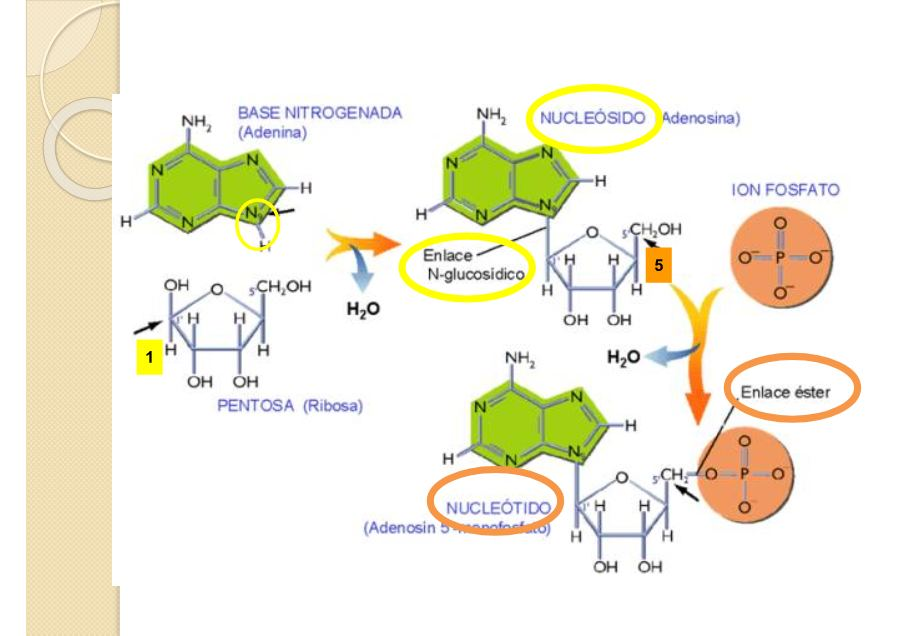
Cómo se forma un nucleótido: base + pentosa + fosfato (diap. 13)
Entiéndelo: Primero se unen la base y el azúcar (nucleósido); luego se le engancha el fosfato y ya es un nucleótido, un eslabón completo de la cadena.
Truco:Nucleósi-D-o = sin fosfato (le falta algo); nucleóti-T-o = con todo.
Ponte a prueba: ¿Qué partes tiene un nucleótido y qué diferencia hay con un nucleósido?
3
El grupo fosfato
Diapositiva 9
Lo que dice la profe
Grupo fosfato
1 átomo de fósforo (centro)
4 átomos de oxígeno (vértices)
Grupo fosfato: Una de las 3 partes del nucleótido: un fósforo rodeado de oxígenos.
Entiéndelo: Es la pieza que da carácter ácido a los ácidos nucleicos.
Truco:1 P en el centro, 4 O en las esquinas: como una mesa con 4 patas.
Ponte a prueba: ¿De qué átomos está formado el grupo fosfato?
4
La pentosa: ribosa y desoxirribosa
Diapositivas 10, 18 y 19 · imprescindible
Lo que dice la profe
Pentosa (azúcar):
Ribosa → ARN
Desoxirribosa → ADN
Pentosa: Azúcar de 5 carbonos.
Entiéndelo: El nombre del ácido nucleico te dice su azúcar: ácido desoxirribonucleico lleva desoxirribosa; ácido ribonucleico lleva ribosa.
Truco: El azúcar está escondido en el nombre: ADN = Desoxirribosa.
Ponte a prueba: ¿Qué pentosa lleva el ADN y cuál el ARN?
5
Las 5 bases nitrogenadas
Diapositiva 11 · imprescindible
Lo que dice la profe
Bases nitrogenadas (5 tipos):
Tipos
Base nitrogenada
Ácido Nucleico
PÚRICAS
ADENINA, GUANINA
ADN y ARN
PIRIMIDÍNICAS
CITOSINA
ADN y ARN
PIRIMIDÍNICAS
TIMINA
ADN
PIRIMIDÍNICAS
URACILO
ARN
Bases púricas: Las bases más grandes: adenina y guanina.
Bases pirimidínicas: Las bases más pequeñas: citosina, timina y uracilo.
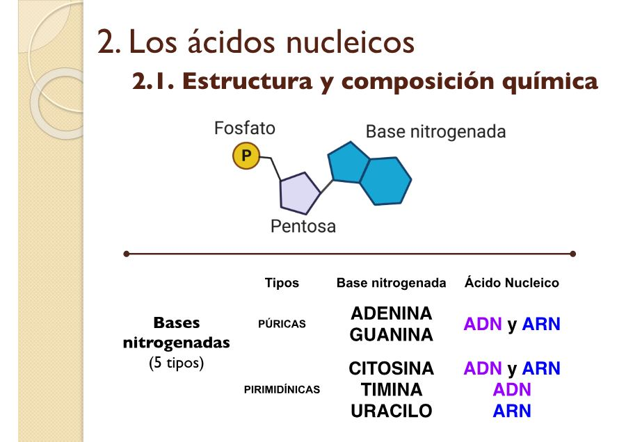
Bases nitrogenadas: púricas y pirimidínicas (diap. 11)
Entiéndelo: A, G y C están en los dos. La única que cambia: el ADN usa T (timina) y el ARN usa U (uracilo).
Truco: «Pura AGua»: púricas = A y G. Todas las demás (C, T, U) son pirimidínicas.
Ponte a prueba: Clasifica las 5 bases nitrogenadas y di en qué ácido nucleico está cada una.
6
El enlace fosfodiéster
Diapositiva 14
Lo que dice la profe
ENLACE FOSFODIESTER
Fragmento de ácido nucleico
Enlace fosfodiéster: La unión entre un nucleótido y el siguiente, a través del fosfato.
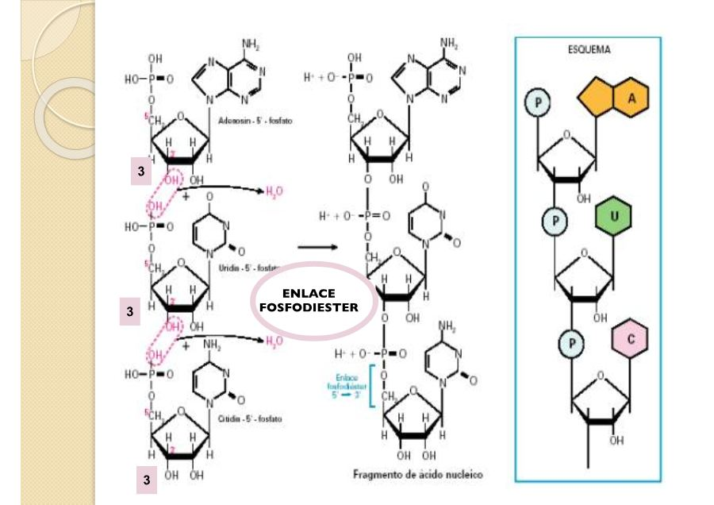
Enlace fosfodiéster entre nucleótidos (diap. 14)
Entiéndelo: Es el «pegamento» que encadena un nucleótido con el siguiente: el fosfato de uno se une al azúcar del otro, y así se forma el esqueleto de la cadena.
Truco: Fosfo-DI-éster: el fosfato hace de puente entre dos azúcares.
Ponte a prueba: ¿Cómo se llama el enlace que une un nucleótido con el siguiente?
7
Propiedades fisicoquímicas
Diapositivas 20 y 21 · imprescindible
Lo que dice la profe
Fuertemente ácidos en solución acuosa (por los grupos fosfato).
Elevada viscosidad.
La unión de dos cadenas complementarias de ácidos nucleicos se unen mediante puentes de hidrógeno entre las bases nitrogenadas → hibridación: esto puede ocurrir tanto en ADN como en ARN.
Las dos cadenas de la doble hélice de ADN se pueden separar elevando la temperatura o el pH → desnaturalización: rompen los puentes de H entre las bases nitrogenadas complementarias.
La desnaturalización es reversible si se baja de nuevo la temperatura o el pH → renaturalización.
Hibridación: «La unión de dos cadenas complementarias de ácidos nucleicos se unen mediante puentes de hidrógeno entre las bases nitrogenadas»
Desnaturalización: «Las dos cadenas de la doble hélice de ADN se pueden separar elevando la temperatura o el pH»
Renaturalización: Volver a unirse las cadenas al bajar la temperatura o el pH.
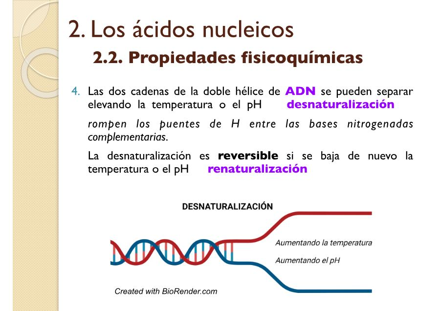
Desnaturalización al subir la temperatura o el pH (diap. 21)
Entiéndelo: Las dos cadenas están unidas por puentes de H, que son uniones débiles: con calor se abren como una cremallera (desnaturalización) y al enfriar se vuelven a cerrar (renaturalización).
Truco:Á-V-H-D: Ácidos, Viscosos, Hibridan, se Desnaturalizan (y se renaturalizan).
Ponte a prueba: Di las propiedades fisicoquímicas de los ácidos nucleicos. ¿Es reversible la desnaturalización?
8
Características del ADN
Diapositiva 15 · imprescindible
Lo que dice la profe
Largas cadenas de desoxirribonucléotidos formados por el grupo fosfato, una desoxirribosa y 4 tipos de bases nitrogenadas (A, T, G y C).
Tamaño: depende del número de nucleótidos. Las moléculas de ADN que forman los cromosomas son de gran tamaño (millones de pares de bases).
Secuencia de bases nitrogenadas (orden de las bases y la proporción de cada una): depende de cada especie.
Desoxirribonucleótido: Nucleótido del ADN (lleva desoxirribosa).
Entiéndelo: El orden de las «letras» es la información: por eso cambia de una especie a otra.
Truco:C-T-S: Composición, Tamaño, Secuencia.
Ponte a prueba: Di las 3 características del ADN.
9
Estructura primaria del ADN
Diapositiva 16 · imprescindible
Lo que dice la profe
ESTRUCTURA PRIMARIA del ADN: es la secuencia de bases nitrogenadas de la cadena de nucleótidos leídas en dirección 5’ → 3’.
5’ extremo fosfato
3’ extremo pentosa
Secuencia: (5’) A C T G (3’)
Extremo 5’ y 3’: Los dos extremos de una cadena: el 5’ acaba en fosfato y el 3’ en pentosa.
Entiéndelo: Es simplemente el orden de las letras de una cadena, leído siempre en el mismo sentido: de 5’ a 3’.
Truco: «5 F»: el 5’ es el del Fosfato; el 3’, el del azúcar.
Ponte a prueba: ¿Qué es la estructura primaria del ADN y qué hay en sus extremos 5’ y 3’?
10
Principio de complementariedad
Diapositivas 17, 18 y 19 · imprescindible
Lo que dice la profe
Las bases nitrogenadas complementarias se unen mediante puentes de H en función de su tamaño y estructura. Son complementarias:
A y T → 2 puentes de H
C y G → 3 puentes de H
Secuencia: (5’) A C T G (3’) / (3’) T G A C (5’) - complementaria
Para que la unión sea estable, los 2 nucleótidos que portan las bases complementarias han de tener sus fosfatos en posiciones opuestas.
Bases complementarias: Las parejas de bases que encajan: A con T (o U en el ARN) y C con G.
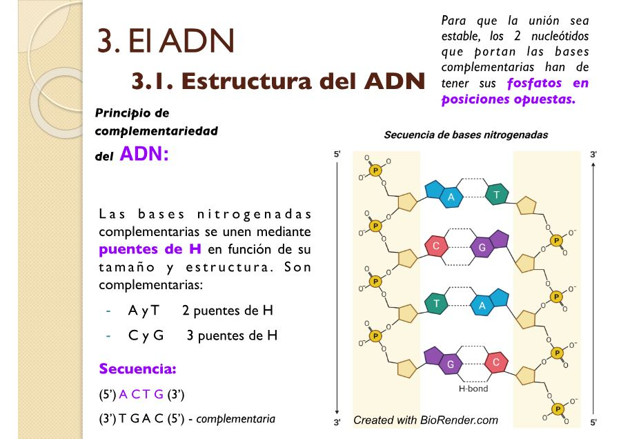
Bases complementarias unidas por puentes de H (diap. 17)
Entiéndelo: Si conoces una cadena, conoces la otra: donde hay A pones T, donde hay C pones G. En el ARN, la A se empareja con U (diap. 19).
Truco: «AT 2, CG 3»: la pareja C-G es la más fuerte porque tiene más puentes.
Ponte a prueba: ¿Qué bases son complementarias y cuántos puentes de H forma cada pareja? Escribe la complementaria de 5’ ACTG 3’.
11
El modelo de la doble hélice
Diapositiva 22
Lo que dice la profe
En 1953 Watson y Crick, junto con los resultados de Wilkins y Rosalind Franklin, propusieron un modelo para explicar la estructura del ADN. Este modelo permite explicar el principio de complementariedad y sostiene que el ADN es una doble hélice.
Entiéndelo: Las imágenes de rayos X de Rosalind Franklin fueron la pista clave para que Watson y Crick dibujaran la doble hélice.
Truco:1953 → 4 nombres: Watson, Crick, Wilkins y Franklin.
Ponte a prueba: ¿Quién propuso el modelo de la doble hélice, en qué año y con los resultados de quién?
12
Estructura secundaria: la doble hélice
Diapositivas 23 y 24 · imprescindible
Lo que dice la profe
Es la doble hélice del ADN formada por las dos cadenas complementarias de nucleótidos. La secuencia de cada cadena es la estructura primaria. Cuando las cadenas complementarias se unen obtenemos la estructura secundaria.
Doble hélice se forma alrededor un eje central.
Las 2 cadenas son antiparalelas 5’-3’ vs. 3’-5’
La secuencia de bases nitrogenadas de ambas cadenas es complementaria. Si se conoce la secuencia de una de las cadenas o hebras, se puede deducir la otra.
Ambas cadenas se mantienen unidas por puentes de H.
Las bases nitrogenadas se encuentran en el interior de la estructura. En el exterior se sitúan los fosfatos y la desoxirribosa.
Un giro de 360 ºC= 10 nucleótidos
Antiparalelas: Las dos cadenas van en sentidos opuestos: una 5’→3’ y la otra 3’→5’.
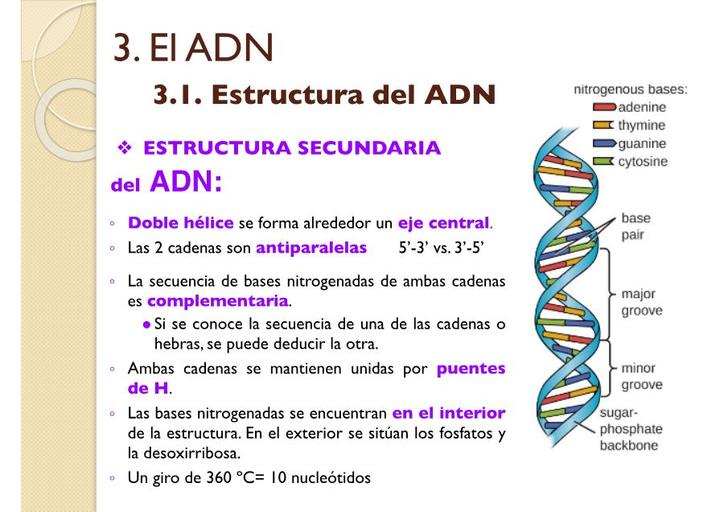
La doble hélice del ADN (diap. 24)
Entiéndelo: Imagina una escalera de caracol: los pasamanos son el fosfato y el azúcar (fuera) y los peldaños son las parejas de bases (dentro). Cada vuelta completa tiene 10 peldaños.
Truco:E-A-C-H-I-10: Eje, Antiparalelas, Complementarias, puentes de H, bases en el Interior, 10 por giro.
Ponte a prueba: Describe la estructura secundaria del ADN: sus 6 características.
13
Estructura terciaria: ADN unido a proteínas
Diapositiva 26 · imprescindible
Lo que dice la profe
ADN CROMOSÓMICO NUCLEAR
La mayor parte del ADN de las células eucariotas se encuentra en el núcleo.
El ADN no se encuentra libre, sino que está asociado a proteínas básicas que compactan el ADN. Dos tipos:
Histonas: Proteínas con una función estructural y reguladora.
No histonas: Proteínas muy heterogéneas con funciones estructurales, enzimáticas y reguladoras.
Histonas: «Proteínas con una función estructural y reguladora.»
No histonas: «Proteínas muy heterogéneas con funciones estructurales, enzimáticas y reguladoras.»
Entiéndelo: El ADN de una célula mide casi dos metros: sin proteínas que lo enrollen no cabría en el núcleo.
Truco:Histonas = carretes (estructura); no histonas = «todo lo demás».
Ponte a prueba: ¿Dónde está la mayor parte del ADN eucariota y a qué dos tipos de proteínas se asocia?
14
Nucleosoma y fibra de cromatina
Diapositivas 27 a 29 · imprescindible
Lo que dice la profe
NIVELES DE LA ESTRUCTURA TERCIARIA:
Un nucleosoma es la estructura cilíndrica formada por un octámero de histonas (8 histonas) sobre la que se enrolla la doble hélice de ADN.
La molécula de ADN asociada a las histonas se denomina fibra de cromatina “Collar de perlas”
Nucleosoma: «Un nucleosoma es la estructura cilíndrica formada por un octámero de histonas (8 histonas) sobre la que se enrolla la doble hélice de ADN.»
Fibra de cromatina: El ADN con sus nucleosomas, como un collar de perlas.
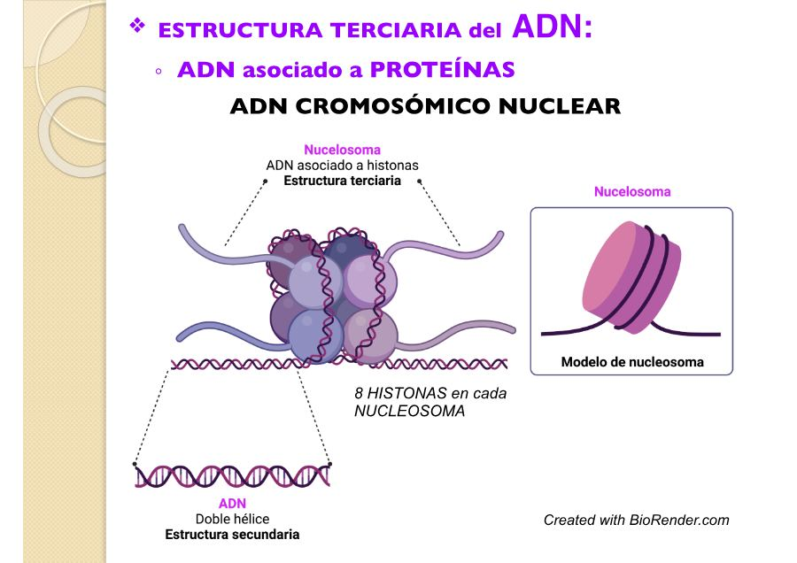
Nucleosoma: 8 histonas con el ADN enrollado (diap. 27)
Entiéndelo: Cada perla del collar es un nucleosoma (8 histonas con ADN enrollado) y el hilo entre perlas es ADN.
Truco:Nucleosoma = 8 (octámero) · fibra = collar de perlas.
Ponte a prueba: ¿Qué es un nucleosoma y qué es la fibra de cromatina?
15
Solenoide y cromosoma metafásico
Diapositivas 30 a 33 · imprescindible
Lo que dice la profe
La fibra de cromatina, a su vez, se enrolla sobre sí misma formando el solenoide.
Cada vuelta del solenoide tiene 6 nucleosomas con 6 histonas H1. Es el nivel de empaquetamiento más bajo de los cromosomas.
En el momento de la división celular (MITOSIS), las fibras de cromatina se ordenan y experimentan varios niveles de superenrollamiento hasta formar el cromosoma metafásico.
Solenoide: La fibra de cromatina enrollada sobre sí misma en espiral.
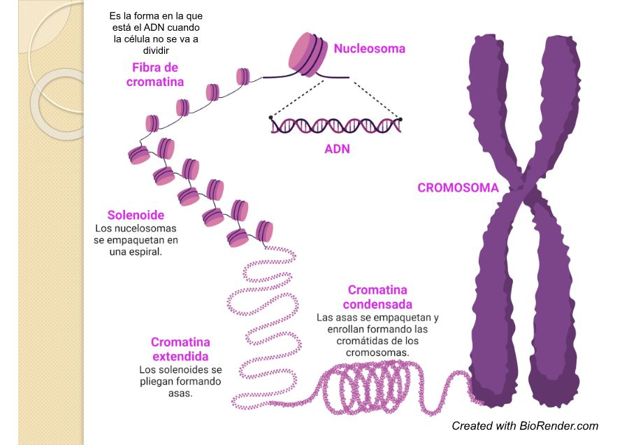
Del ADN al cromosoma: nucleosoma, fibra, solenoide, asas y cromosoma (diap. 33)
Entiéndelo: Es como enrollar un cable de teléfono: ADN → nucleosomas (collar) → solenoide (espiral de 6) → asas → cromosoma, lo más compacto, solo al dividirse.
Ponte a prueba: Ordena los niveles de empaquetamiento del ADN hasta el cromosoma metafásico. ¿Cuántos nucleosomas tiene cada vuelta del solenoide?
16
ADN cromosómico: eucromatina y heterocromatina
Diapositiva 34 · imprescindible
Lo que dice la profe
ADN cromosómico: en el núcleo. En humanos, 20.000 - 25.000 genes.
Eucromatina: cromatina poco compactada y que presenta una gran concentración de genes. Normalmente, aunque no siempre, estos genes se encuentran en transcripción activa.
Heterocromatina: cromatina más compactas y condensadas, por lo que no se puede dar la transcripción.
La eucromatina se replica al inicio de la fase S, mientras que la heterocromatina se replica hacia el final fase S.
Eucromatina: «Cromatina poco compactada y que presenta una gran concentración de genes.»
Heterocromatina: «Cromatina más compactas y condensadas, por lo que no se puede dar la transcripción.»
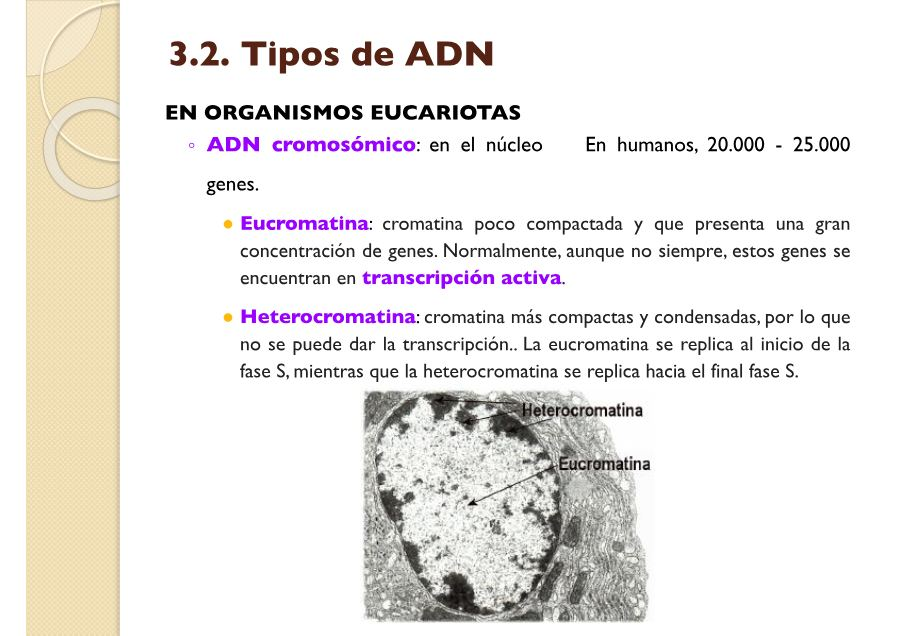
Eucromatina y heterocromatina en un núcleo (diap. 34)
Entiéndelo: Lo que está suelto (eucromatina) se puede leer y se copia primero; lo que está muy apretado (heterocromatina) no se lee y se copia al final.
Truco:EU = bUEno, suelto, se lee; HETERO = apretado, cerrado.
Ponte a prueba: Diferencia la eucromatina de la heterocromatina: compactación, transcripción y cuándo se replican.
17
ADN mitocondrial y de cloroplastos
Diapositivas 35 a 37
Lo que dice la profe
ADN mitocondrial: en todos los organismos eucariotas.
ADN de cloroplastos: Sólo en organismos fotosintéticos.
ADN mitocondrial (ADNmt): ADN bicatenario (doble hélice) y circular de 16,5 kb (en humanos).
Suele haber varias copias de ADNmt en cada mitocondria.
Contiene 37 genes que codifican para ARN ribosómico, ARN de transferencia y proteínas implicadas en los procesos que tienen lugar en la mitocondria como la respiración celular.
Se replica de manera independiente respecto al ADN nuclear.
ADN de cloroplastos (ADNcp): ADN bicatenario (doble hélice) y circular de entre 120 y 160 kb.
Suele haber varias moléculas de ADN circular en cada cloroplasto.
Contiene en torno a 150 genes (depende de la especie), que codifican para ARN ribosómico, ARN de transferencia y proteínas implicadas en los procesos que tienen lugar en la cloroplasto, especialmente en la fotosíntesis.
Se replica de manera independiente respecto al ADN nuclear.
Bicatenario: De dos cadenas (doble hélice).
kb: Kilobases: miles de pares de bases.
Entiéndelo: Las mitocondrias y los cloroplastos tienen su propio ADN pequeño y circular, con los genes que necesitan para su trabajo, y lo copian por su cuenta.
Truco:Mito = 16,5 kb y 37 genes; cloro = 120-160 kb y 150 genes. Los dos: circulares y se replican solos.
Ponte a prueba: Compara el ADN mitocondrial y el de cloroplastos: forma, tamaño, número de genes y replicación.
18
ADN de procariotas
Diapositiva 38
Lo que dice la profe
ADN de procariotas (bacterias): ADN bicatenario (doble hélice) y circular.
Un sólo cromosoma circular que está libre en el citoplasma.
No está unido a proteínas, por tanto no forma cromatina.
Además del cromosoma, muchos procariotas presentan pequeñas moléculas de ADN circular denominadas PLÁSMIDOS.
Plásmidos: «Pequeñas moléculas de ADN circular»
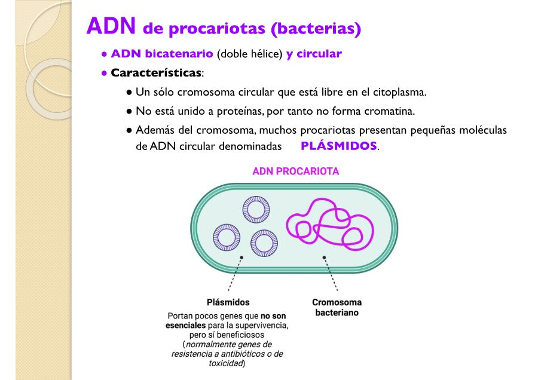
ADN de procariotas: cromosoma circular y plásmidos (diap. 38)
Entiéndelo: Las bacterias no tienen núcleo: su único cromosoma flota en el citoplasma, desnudo (sin histonas), y a veces llevan anillos extra, los plásmidos.
Ponte a prueba: ¿Cómo es el ADN de las bacterias? ¿Qué son los plásmidos?
19
Características del ARN
Diapositiva 39 · imprescindible
Lo que dice la profe
Cadenas de ribonucléotidos formados por el grupo fosfato, una ribosa y 4 tipos de bases nitrogenadas (A, U, G y C).
Tamaño: depende del número de nucleótidos, pero son mucho más pequeñas que las moléculas de ADN (cientos o miles de pares de bases.
Función: controla la síntesis de proteínas a partir de la información contenida en el ADN.
Ribonucleótido: Nucleótido del ARN (lleva ribosa).
Entiéndelo: El ARN es una copia corta y de un solo uso de un trocito del ADN, la que sale a fabricar proteínas.
Truco: ARN = Ribosa, Uracilo, corto, Una cadena.
Ponte a prueba: Di las características del ARN: composición, tamaño y función.
20
Estructuras del ARN
Diapositivas 40 a 43 · imprescindible
Lo que dice la profe
ESTRUCTURA PRIMARIA del ARN: Es la secuencia de bases nitrogenadas de la cadena simple de nucleótidos leídas en dirección 5’ → 3’.
ESTRUCTURA SECUNDARIA del ARN: La cadena simple de ARN puede plegarse y presentar regiones con bases apareadas (ej. ARN de transferencia). Las bases NO siempre serán complementarias (A-U, G-C, G-U). Aunque existan zonas apareadas, los extremos 5’ y 3’ que marcan el inicio y el final de la molécula permanecerán libres.
ESTRUCTURA TERCIARIA del ARN: Consiste en un plegamiento de la estructura secundaria, normalmente por asociación con proteínas.
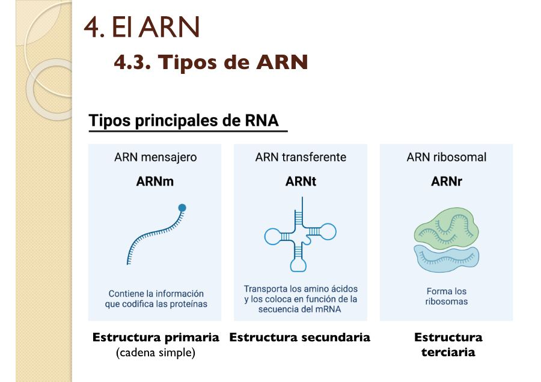
Estructura primaria, secundaria y terciaria del ARN (diap. 43)
Entiéndelo: Una sola cadena que se dobla sobre sí misma (secundaria) y luego se pliega más con ayuda de proteínas (terciaria). Los dos extremos siempre quedan sueltos.
Truco:1ª = cadena · 2ª = se dobla · 3ª = se pliega con proteínas. Pareja «rara» del ARN: G-U.
Ponte a prueba: Explica las estructuras primaria, secundaria y terciaria del ARN.
21
ARN mensajero (ARNm)
Diapositiva 44 · imprescindible
Lo que dice la profe
ARN mensajero (ARNm). En eucariotas:
Es una copia exacta de la secuencia de un gen de ADN.
Porta la información para la síntesis de una proteína.
ARNm: La copia de un gen que lleva la receta al ribosoma.
Entiéndelo: Es la fotocopia de una receta (un gen) que sale del núcleo para que el ribosoma la cocine.
Truco: ARNm = mensaje.
Ponte a prueba: ¿Qué es el ARNm y qué función tiene?
22
ARN transferente (ARNt)
Diapositivas 45 y 46 · imprescindible
Lo que dice la profe
Transportan los aminoácidos hasta los ribosomas para ir formando la cadena proteica.
Estructura secundaria en forma de trébol, que se pliega en una estructura terciaria en forma de L.
Brazo aceptor: Sitio de unión para el aminoácido (CCA-3’)
Brazo anticodón: Contiene el anticodón correspondiente al aminoácido que lleva. Este anticodón reconoce el codón de ARNm que indica el aminoácido que se tiene que añadir a la proteína.
Anticodón: Las 3 bases del ARNt que encajan con un codón del ARNm.
Brazo aceptor: La punta del ARNt donde se engancha el aminoácido (CCA-3’).
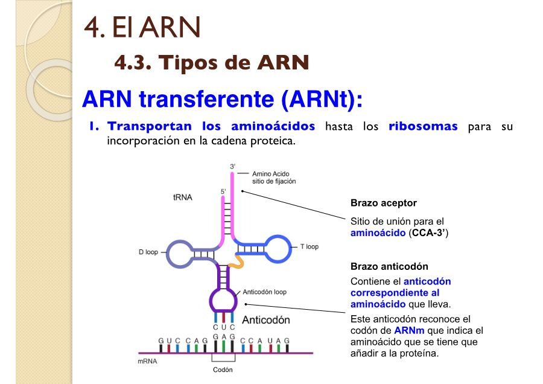
ARNt: brazo aceptor y anticodón (diap. 46)
Entiéndelo: Es el repartidor: por un lado carga el aminoácido (brazo aceptor) y por el otro lee el ARNm (anticodón) para dejarlo en su sitio.
Truco: ARNt = transporte · trébol que se pliega en L.
Ponte a prueba: ¿Qué función tiene el ARNt? Describe su forma y sus dos brazos importantes.
23
ARN ribosomal (ARNr)
Diapositivas 47 y 48 · imprescindible
Lo que dice la profe
Es el ARN mayoritario en las células (aproximadamente el 80% del ARN).
Estructura secundaria muy compleja, con muchas horquillas y bucles.
Combinado con ciertas proteínas forma los ribosomas. Orgánulos citoplasmáticos responsables de la síntesis de proteínas.
Subunidad 60: 3 moléculas de ARNr, 49 proteínas
Subunidad 40: 1 moléculas de ARNr, 33 proteínas
Ribosoma: La «máquina» que fabrica proteínas.
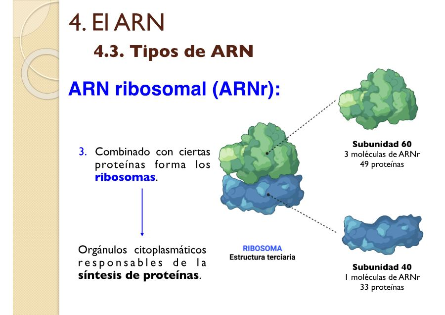
Ribosoma: subunidades 60 y 40 (diap. 48)
Entiéndelo: El ARNr es la mayor parte del ARN de la célula: junto con proteínas forma los ribosomas, la fábrica de proteínas.
Ponte a prueba: ¿Qué porcentaje del ARN es ARNr, qué forma y qué subunidades tiene el ribosoma?
24
El flujo de la información genética
Diapositivas 49 y 52 · imprescindible
Lo que dice la profe
DOGMA CENTRAL DE LA BIOLOGÍA: Del GEN a la PROTEÍNA.
El ADN almacena la información genética de un individuo, la transmite a los descendientes y dirige la síntesis de proteínas. Para llevar esto a cabo se dan distintos procesos:
Replicación: Duplicación del material genético, ADN (para la división celular: mitosis y meiosis).
Transcripción: Síntesis de ARNm partiendo de ADN.
Traducción: Síntesis de proteínas partiendo de ARNm.
Dogma central de la biología: El camino de la información: ADN → ARN → proteína.
Entiéndelo: Copiar el libro entero (replicación), fotocopiar una receta (transcripción) y cocinarla (traducción).
Ponte a prueba: Di los 3 procesos del flujo de la información genética y qué se obtiene en cada uno.
25
Replicación: qué es y cuándo ocurre
Diapositiva 53 · imprescindible
Lo que dice la profe
Proceso por el cual una molécula de ADN se duplica para dar lugar a dos moléculas de ADN idénticas. Ocurre en la fase S de la interfase, cuando la célula se prepara para dividirse por mitosis o meiosis.
Fase S: La etapa de la interfase en la que la célula copia su ADN.
Entiéndelo: Antes de dividirse, la célula fotocopia todo su ADN para que cada hija se lleve una copia completa.
Truco: Fase S = Síntesis del ADN.
Ponte a prueba: ¿Qué es la replicación y en qué momento del ciclo celular ocurre?
26
Semiconservativa y con orígenes de replicación
Diapositiva 54 · imprescindible
Lo que dice la profe
Características generales de la replicación:
Semiconservativa: Una hebra viene de la molécula original y la otra se sintetiza.
Comienza en un origen de replicación: el inicio de la replicación se da en puntos concretos.
En procariotas: un único origen de replicación.
En eucariotas: más de un origen de replicación
Semiconservativa: «Una hebra viene de la molécula original y la otra se sintetiza.»
Entiéndelo: Las dos cadenas se separan y cada una sirve de molde: al final, cada molécula conserva la mitad de la original.
Truco:Semi = la mitad se conserva. Bacteria = 1 origen; eucariota = muchos.
Ponte a prueba: ¿Por qué la replicación es semiconservativa? ¿Cuántos orígenes de replicación hay en procariotas y en eucariotas?
27
Bidireccional y semidiscontinua
Diapositivas 55 a 57 · imprescindible
Lo que dice la profe
Bidireccional: La síntesis de las nuevas cadenas se produce en ambos sentidos usando las 2 cadenas de ADN como molde.
Semidiscontinua: La síntesis de las cadenas nuevas se produce siempre en dirección 5’ → 3’. Problema: las hebras de ADN son antiparalelas.
Se forma la burbuja de replicación, y el proceso ocurre hacia ambos lados y en las dos cadenas a la vez.
Una de las cadenas se sintetiza de manera continua (5’-3’): Cadena líder, conductora o continua.
La otra hebra se sintetiza de manera discontinua, en forma de fragmentos (fragmentos de Okazaki): Hebra retardada.
Hebra conductora: La cadena nueva que se copia seguida, de un tirón.
Hebra retardada: La cadena nueva que se copia a trozos (fragmentos de Okazaki).
Fragmentos de Okazaki: Los trocitos de ADN de la hebra retardada.
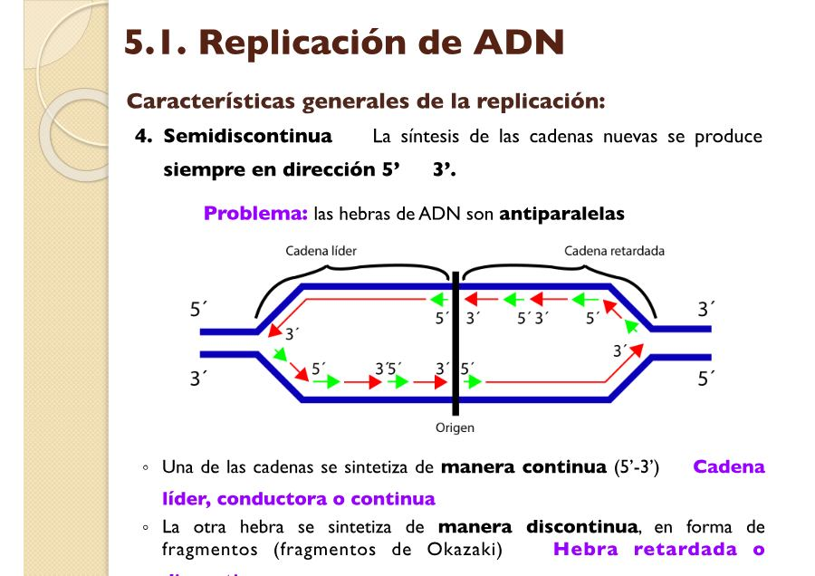
Hebra continua y hebra retardada con fragmentos de Okazaki (diap. 57)
Entiéndelo: Solo se puede copiar en sentido 5’→3’. Como las cadenas van al revés una de otra, una se copia seguida y la otra «marcha atrás», a trocitos.
Truco:Semi-dis-continua: una continua + una discontinua = media y media.
Ponte a prueba: ¿Por qué la replicación es semidiscontinua? Explica la hebra conductora y la retardada.
28
Iniciación: origen, helicasas y burbuja
Diapositivas 59 a 62 y 68 · imprescindible
Lo que dice la profe
La replicación se divide en 2 fases: 1. INICIACIÓN 2. ELONGACIÓN.
Fase de iniciación: formación de las horquillas de replicación
La replicación del ADN empieza con una secuencia de nucleótidos, al cual se denomina “origen de replicación”.
Unas proteínas específicas reconocen el origen de replicación y se unen a él. La unión de estas proteínas hace que se activen las helicasas.
Las helicasas rompen los puentes de hidrógeno que hay entre las bases nitrogenadas de las dos cadenas complementarias del ADN y forman la burbuja de replicación.
Las dos helicasas empiezan a realizar su función a partir del punto de origen de replicación. Una en un sentido y la otra en el otro sentido. De esta manera la replicación del ADN es bidireccional.
Helicasa: La enzima que abre la doble hélice rompiendo los puentes de H.
Burbuja de replicación: La zona abierta del ADN donde se está copiando.
Entiéndelo: Unas proteínas marcan el punto de salida; las helicasas abren la cremallera hacia los dos lados y forman una burbuja.
Truco:Helicasa = abre la hélice.
Ponte a prueba: Explica los 4 primeros pasos de la iniciación de la replicación.
29
Iniciación: SSBP, girasa y topoisomerasa
Diapositivas 63 y 69 · imprescindible
Lo que dice la profe
Para que esta estructura se mantenga, las proteínas de unión a cadena sencilla (SSBP) se unen a las cadenas desenrolladas.
Este desenrollamiento provoca tensión en las zonas próximas a la burbuja. Por ello, la girasa y la topoisomerasa actúan relajando esa tensión.
Proteínas de unión a cadena sencilla (SSB): se unen a las cadenas desenrolladas evitando que se vuelva a formar la doble hélice.
SSBP: Proteínas de unión a cadena sencilla: mantienen las cadenas separadas.
Topoisomerasa y girasa: Enzimas que quitan la tensión que se crea al desenrollar.
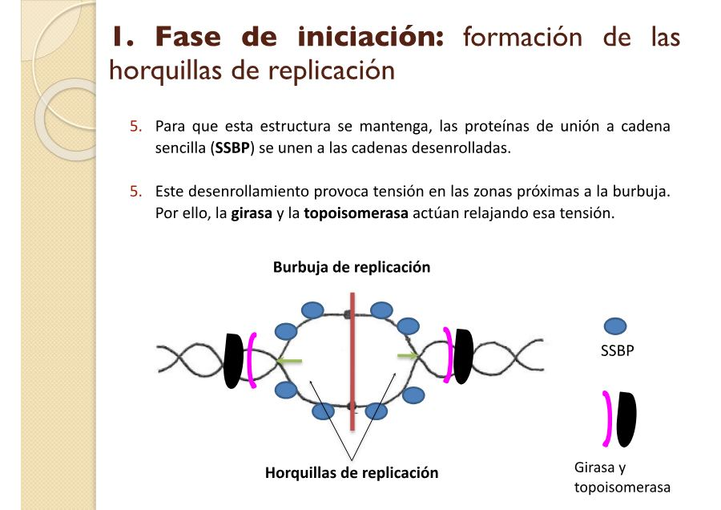
Burbuja y horquillas de replicación con SSBP, girasa y topoisomerasa (diap. 63)
Entiéndelo: Las SSBP son pinzas que impiden que la cremallera se vuelva a cerrar; la girasa y la topoisomerasa quitan las vueltas de más que se crean delante, como cuando desenredas un cable.
Truco:SSB = Sujeta Separadas; topo y girasa = quitan tensión.
Ponte a prueba: ¿Qué hacen las SSBP? ¿Y la girasa y la topoisomerasa?
30
Elongación: la primasa y los primers
Diapositivas 64, 70 y 71 · imprescindible
Lo que dice la profe
Fase de elongación: síntesis de las nuevas hebras de ADN
La primasa (ARN polimerasa) sintetiza los primers o cebadores en dirección 5’ → 3’.
Hebra conductora: Un único primer en el origen de la replicación (5’-3’)
Hebra retardada: Varios primers. A medida que avanza la horquilla, se van sintetizando nuevos cebadores que darán lugar a fragmentos de Okazaki.
Primasa: Es una enzima con función ARN polimerasa que sintetiza fragmentos cortos de ARN (10 nucleótidos), denominados cebadores o primers. Los primers son complementarios de zonas concretas de ADN y sirven para que la ADN polimerasa empiece a hacer la nueva cadena de ADN copiando la original.
Primer o cebador: «fragmentos cortos de ARN (10 nucleótidos), denominados cebadores o primers»
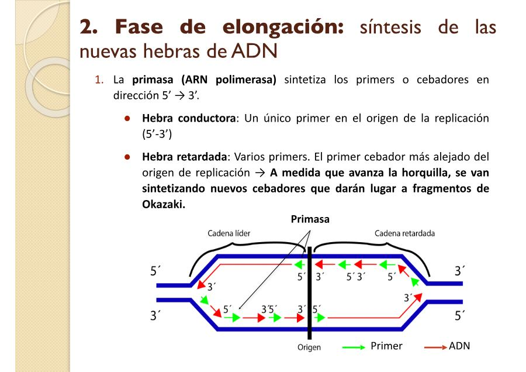
La primasa coloca los primers en las dos hebras (diap. 64)
Entiéndelo: La ADN polimerasa no sabe empezar de cero: necesita un trocito de ARN (el primer) donde engancharse. La continua necesita uno; la retardada, uno por cada fragmento.
Truco:Primasa → primer (de ARN, 10 nucleótidos).
Ponte a prueba: ¿Qué hace la primasa? ¿Cuántos primers necesita cada hebra?
31
Elongación: la ADN polimerasa III
Diapositivas 65, 72 y 73 · imprescindible
Lo que dice la profe
Una vez que se colocan los primers, la ADN polimerasa III llega y empieza a sintetizar las nuevas hebras en dirección 5’ → 3’.
Hebra conductora: Elongación continua (5’-3’)
Hebra retardada: Elongación discontinua (5’-3’) → se van sintetizando los fragmentos de Okazaki hasta alcanzar el primer siguiente
ADN polimerasa: Enzima que añade nuevos nucleótidos al extremo OH-3’ de una cadena en crecimiento, es decir, añade nucleótidos en dirección 5’ → 3’ siempre.
La secuencia de nucleótidos que se incorpora es complementaria de la secuencia de cadena molde que se está leyendo.
Tanto procariotas como eucariotas presentan varios tipos de polimerasas.
ADN polimerasa: La enzima que va añadiendo nucleótidos a la cadena nueva.
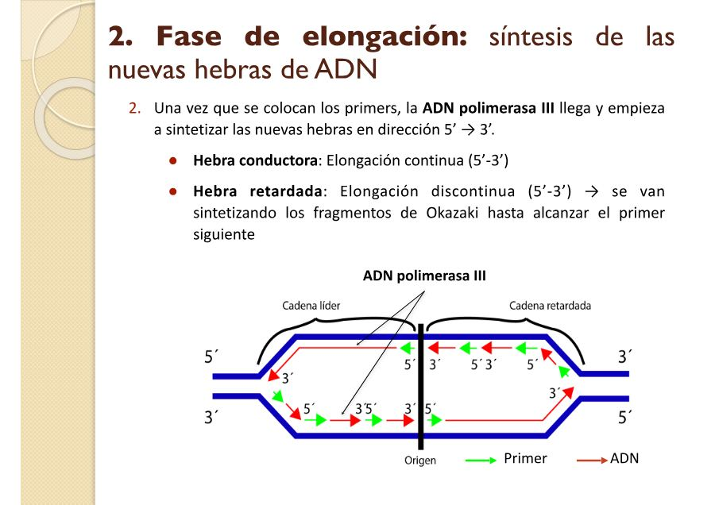
La ADN polimerasa III alarga las hebras (diap. 65)
Entiéndelo: Es la que hace el trabajo de verdad: lee el molde y va poniendo la base complementaria, siempre añadiendo por el extremo 3’.
Truco: Pol III = la que construye (la grande del trabajo).
Ponte a prueba: ¿Qué hace la ADN polimerasa III y en qué dirección trabaja siempre?
32
Elongación: ADN polimerasa I y ligasa
Diapositivas 66 y 74 · imprescindible
Lo que dice la profe
Eliminación de primers y unión de todos los fragmentos de ADN.
ADN polimerasa I: Actividad exonucleasa para retirar los cebadores y actividad polimerasa para sustituirlos por ADN.
Ligasa: tras la ADN polimerasa I, la ligasa se encargará de ir uniendo los fragmentos de ADN de la hebra que se acaba de copiar.
Ligasa: La enzima que pega los fragmentos de ADN entre sí.
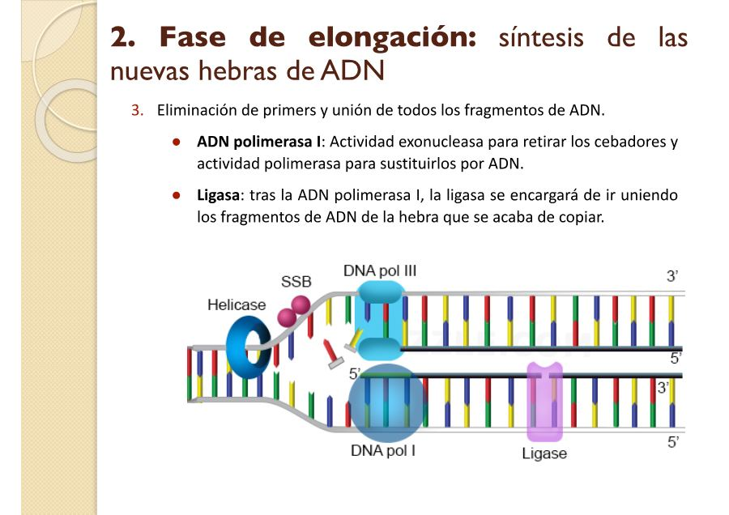
Helicasa, SSB, ADN pol III, ADN pol I y ligasa (diap. 66)
Entiéndelo: Al final quedan trocitos de ARN (los primers) en medio del ADN: la pol I los quita y los cambia por ADN, y la ligasa pega los trozos.
Truco:Pol I = goma y lápiz (borra primer y pone ADN) · Ligasa = pegamento.
Ponte a prueba: ¿Qué hacen la ADN polimerasa I y la ligasa?
33
Enzimas de la replicación: resumen
Diapositivas 67 a 74 · imprescindible
Lo que dice la profe
Enzimas que actúan en la replicación
Helicasa: Desenrolla y separa las 2 cadenas de la doble hélice en ambos sentidos. Las nuevas hebras que van en la misma dirección que las helicasas serán hebras continuas. En cambio, las que van en dirección opuesta serán las retardadas.
Topoisomerasa: La separación de las dos cadenas genera un superenrollamiento en el resto de la hélice. Esta enzima junto con la girasa se encargan de relajar esa tensión extra.
Proteínas de unión a cadena sencilla (SSB): Se unen a las cadenas desenrolladas evitando que se vuelva a formar la doble hélice
Primasa: sintetiza fragmentos cortos de ARN (10 nucleótidos), denominados cebadores o primers.
ADN polimerasa: La ADN polimerasa reconoce los primers para iniciar la elongación. Hebra continua: requiere un único primer en el origen de replicación. Hebra retardada: requiere varios primers (un primer para cada fragmento de Okazaki).
Hay otra ADN polimerasa que elimina los primers (RNA) y los sustituye por nucleótidos de ADN. También dirección 5’--3’
Ligasa: Une los fragmentos de ADN entre sí.
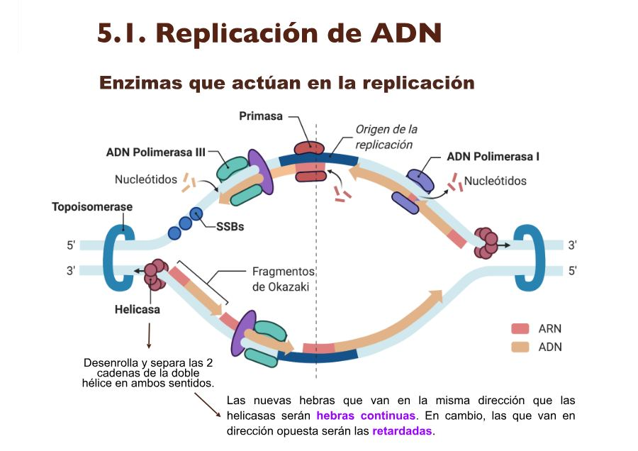
Burbuja de replicación con todas sus enzimas (diap. 68)
Entiéndelo: En orden de trabajo: abrir (helicasa), sujetar (SSB), quitar tensión (topoisomerasa y girasa), poner arranque (primasa), copiar (pol III), cambiar primers (pol I) y pegar (ligasa).
Truco: «Hoy Sale Tu Primo Pol Pol Ligando»: Helicasa, SSB, Topoisomerasa, Primasa, Pol III, Pol I, Ligasa.
Ponte a prueba: Ordena las enzimas de la replicación y di la función de cada una.
34
Peculiaridades en eucariotas y telómeros
Diapositivas 76 y 77
Lo que dice la profe
PECULIARIDADES DE LA REPLICACIÓN EN EUCARIOTAS
Múltiples orígenes de replicación
Varios tipos de ADN polimerasas que se reparten las tareas.
Durante la replicación también se unen las histonas y se estructuran los nucleosomas.
Reducción de telómeros.
Acortamiento de los telómeros
División celular
↓longitud de los telómeros
Final del telómero: Fragmento que se pierde porque no se puede copiar
Telómeros: Los extremos de los cromosomas, que se acortan en cada división.
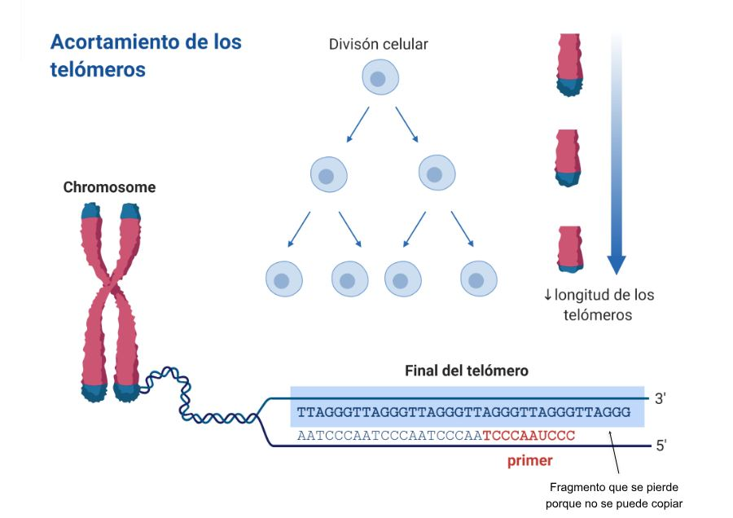
Acortamiento de los telómeros en cada división (diap. 77)
Entiéndelo: En el extremo del cromosoma, el último primer no se puede sustituir por ADN: ese trocito se pierde y el telómero se acorta un poco en cada división.
Truco: Eucariotas: muchos orígenes, muchas polimerasas, histonas y telómeros que se acortan.
Ponte a prueba: Di las 4 peculiaridades de la replicación en eucariotas. ¿Por qué se acortan los telómeros?
35
Transcripción: qué es y sus fases
Diapositiva 78 · imprescindible
Lo que dice la profe
La transcripción es el proceso por el cual se sintetiza una molécula de ARN utilizando como molde una cadena de ADN.
FASES DE LA TRANSCRIPCIÓN: 1. INICIACIÓN 2. ELONGACIÓN 3. TERMINACIÓN
En procariotas: se obtienen directamente moléculas maduras de ARN.
En eucariotas: se obtienen moléculas de ARN que tienen que sufrir modificaciones para madurar.
Transcripción: «La transcripción es el proceso por el cual se sintetiza una molécula de ARN utilizando como molde una cadena de ADN.»
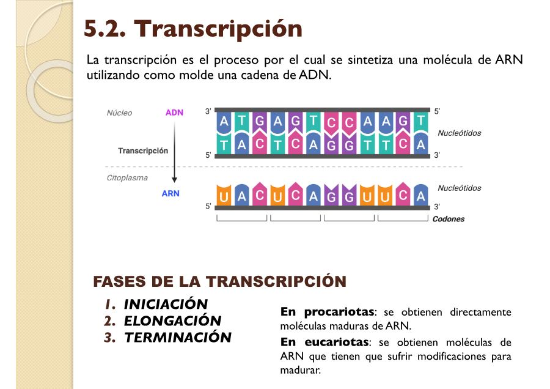
Del ADN al ARN en la transcripción (diap. 78)
Entiéndelo: Se copia solo un trozo (un gen) y en ARN. En bacterias sale listo para usar; en eucariotas hay que «retocarlo» antes.
Truco: 3 fases, como en una carrera: salida, carrera, meta.
Ponte a prueba: ¿Qué es la transcripción, cuáles son sus fases y qué diferencia hay entre procariotas y eucariotas?
36
La ARN polimerasa
Diapositiva 79 · imprescindible
Lo que dice la profe
La enzima principal de este proceso es la ARN polimerasa. Función: síntesis de ARN usando una cadena de ADN como molde. La ARN polimerasa produce la copia de ARN en dirección 5’ → 3’.
Células procariotas: Un único tipo de ARN polimerasa
Células eucariotas: 3 tipos de ARN polimerasas:
ARN polimerasa I: Síntesis de la mayor parte del ARNr.
ARN polimerasa II: Síntesis de ARNm.
ARN polimerasa III: Síntesis del ARNt y una parte del ARNr.
ARN polimerasa: La enzima que fabrica ARN copiando el ADN.
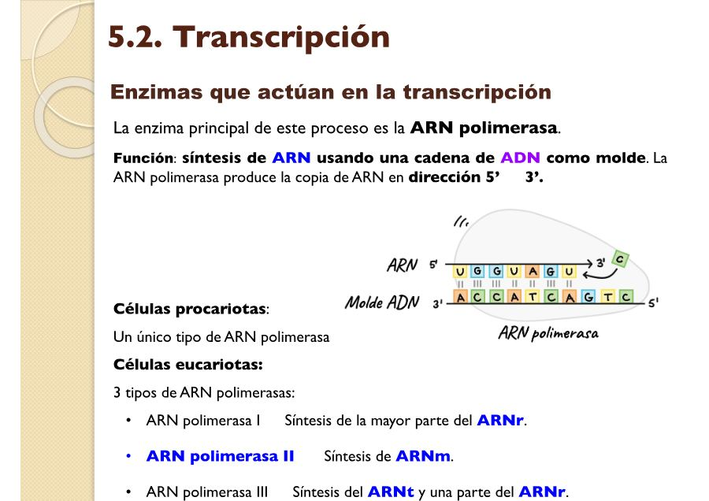
La ARN polimerasa copia el molde de ADN (diap. 79)
Entiéndelo: En bacterias, una sola polimerasa lo hace todo; en eucariotas hay tres especialistas, una para cada tipo de ARN.
Truco: «R-M-T» por orden: I → ARNr, II → ARNm, III → ARNt (y algo de r).
Ponte a prueba: ¿Cuántas ARN polimerasas hay en procariotas y en eucariotas? ¿Qué sintetiza cada una?
37
Iniciación: el promotor
Diapositiva 80 · imprescindible
Lo que dice la profe
Fase de iniciación:
La ARN polimerasa reconoce una secuencia de bases específica llamada promotor, que se encuentra al inicio de un gen → Cada gen tiene su propio promotor.
Después de unirse al promotor, las dos hebras de ADN se separan y comienza la síntesis de ARN.
Promotor: La secuencia al inicio de un gen donde se engancha la ARN polimerasa.
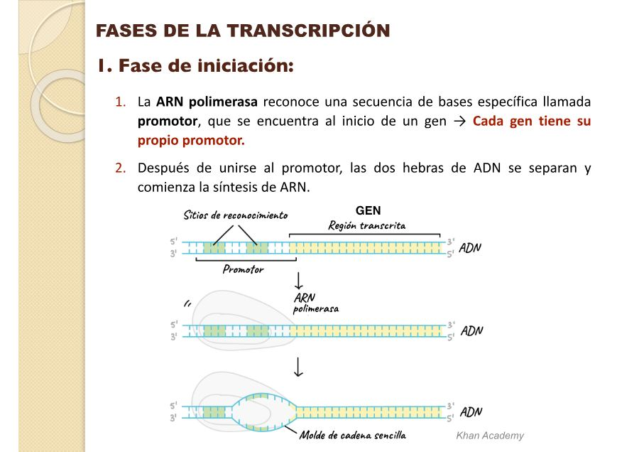
La ARN polimerasa se une al promotor del gen (diap. 80)
Entiéndelo: El promotor es el cartel de «empieza aquí»: la polimerasa lo reconoce, abre el ADN y se pone a copiar.
Truco:Promotor = Puerta de entrada del gen.
Ponte a prueba: ¿Qué ocurre en la fase de iniciación de la transcripción? ¿Qué es el promotor?
38
Elongación: cadena molde y cadena codificante
Diapositivas 81 y 82 · imprescindible
Lo que dice la profe
Fase de elongación:
La ARN polimerasa añade ribonucleótidos en dirección 5’ → 3’, tomando una hebra de ADN como molde (cadena molde 3’ → 5’).
El transcrito de ARN tiene la misma información que la cadena de ADN contraria a la molde (cadena codificante) en el gen, pero contiene la base uracilo (U) en lugar de timina (T).
En la REPLICACIÓN, la unión de nucleótidos es similar.
Cadena molde: La cadena de ADN que se lee (3’→5’).
Cadena codificante: La otra cadena de ADN: el ARN sale igual que ella, pero con U en vez de T.
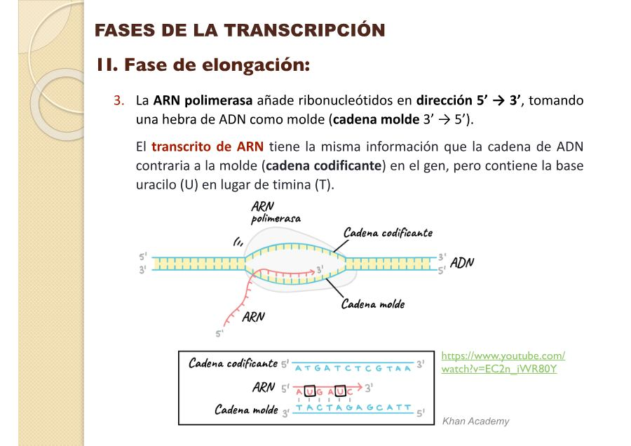
Cadena molde, cadena codificante y ARN (diap. 81)
Entiéndelo: El ARN es complementario de la molde, así que acaba siendo una copia de la codificante… con U donde había T.
Truco:ARN = codificante con U.
Ponte a prueba: Si la cadena codificante es 5’ ATGC 3’, ¿cómo es el ARN? ¿Qué cadena se usa de molde?
39
Terminación: el terminador
Diapositiva 83 · imprescindible
Lo que dice la profe
Fase de terminación:
La síntesis de ARN cuando la ARN polimerasa alcanza una secuencia específica llamada terminador.
En este punto se separa el ARN de la cadena de ADN y de la ARN polimerasa.
Después de la terminación, la transcripción ha concluido.
Un transcrito de ARN que está listo para su uso en la traducción → ARNm.
En procariotas, los transcritos de ARNm están listos para su traducción inmediatamente después de la transcripción. Además, al encontrarse en el citoplasma (no hay núcleo), los ribosomas pueden empezar directamente a sintetizar las proteínas.
Terminador: La secuencia al final del gen donde la polimerasa para y suelta el ARN.
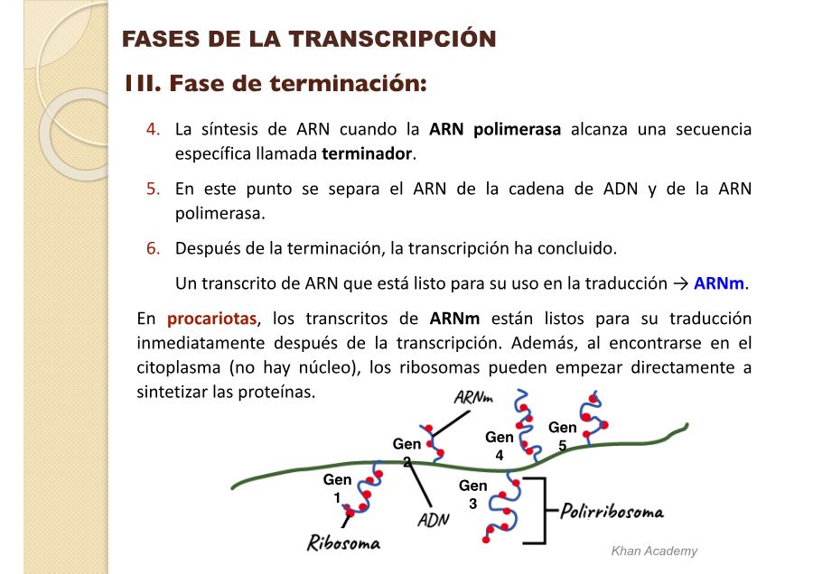
En procariotas los ribosomas traducen a la vez que se transcribe (diap. 83)
Entiéndelo: En bacterias no hay núcleo: mientras se va copiando el ARN, los ribosomas ya lo están leyendo.
Truco:Promotor = salida · Terminador = meta.
Ponte a prueba: ¿Qué pasa en la terminación de la transcripción? ¿Por qué en procariotas se puede traducir enseguida?
40
Por qué madura el ARN en eucariotas
Diapositiva 84 · imprescindible
Lo que dice la profe
En eucariotas, el ARN requiere modificaciones para dar lugar a las moléculas maduras de ARN (ARNm, ARNt y ARNr) → Este proceso se conoce como MADURACIÓN DEL ARN.
¿Por qué el ARN de eucariotas requiere modificaciones?
Porque el ARN, al ser monocatenario, se degrada con mucha facilidad. Por ello, se modifica para evitar su degradación durante la transcripción.
Porque el ARN se sintetiza en el núcleo y para salir al citoplasma necesita modificar un poco su estructura para poder atravesar la membrana del núcleo.
Porque los genes (ADN) tienen información relacionada con la síntesis de proteínas (a estas regiones se les llaman exones), pero también tienen regiones que no tienen este tipo de información (intrones). Por tanto, cuando se produce el ARNm hay que eliminar estas últimas regiones.
Exones: Los trozos del gen con información para la proteína.
Intrones: Los trozos del gen sin esa información, que hay que quitar.
Entiéndelo: Tres problemas, tres soluciones: se rompe fácil (protegerlo), tiene que salir del núcleo (adaptarlo) y lleva trozos que sobran (cortarlos).
Truco:Exón = sale (se queda en el ARN maduro); intrón = se queda dentro (se elimina).
Ponte a prueba: Di los 3 motivos por los que el ARN de eucariotas tiene que madurar.
41
CAP-5’ y cola poliA
Diapositiva 85 · imprescindible
Lo que dice la profe
I. Adición de un CAP-5’ al inicio de la transcripción. Se añade una caperuza de metilguanosina en el extremo 5’ (al inicio del transcrito) → El cap 5' es un nucleótido modificado de guanina (G) que se añade al primer nucleótido del transcrito durante la transcripción. El cap 5':
Evita que el ARN se degrade durante la elongación.
Ayuda al ribosoma a unirse al ARNm y a comenzar a leerlo para hacer una proteína.
II. Adición de una cola de poliadeninas (poliA) al final de la transcripción. Se añade una cola de adeninas (cola poliA) en el extremo 3’ (al final del transcrito) → entre 100-200 adeninas. La cola poliA:
Permite al ARN maduro salir al citoplasma.
CAP-5’: Una «caperuza» de guanina modificada en el principio del ARN.
Cola poliA: Una cola de 100-200 adeninas al final del ARN.
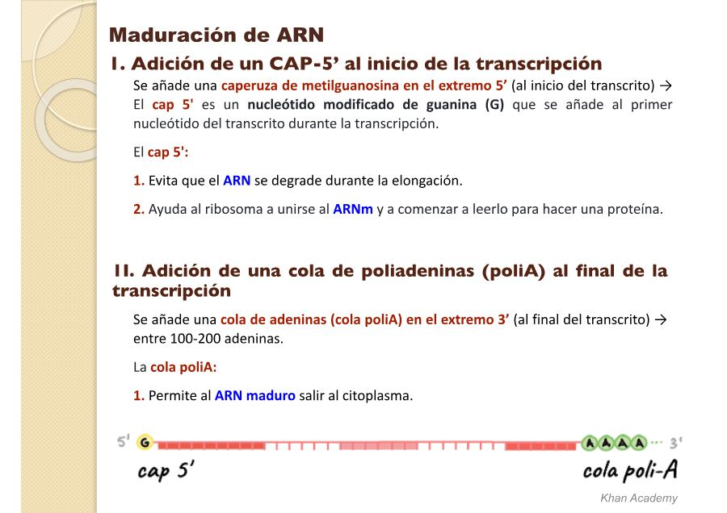
ARN con cap 5’ y cola poli-A (diap. 85)
Entiéndelo: Un «gorro» al principio (protege y ayuda al ribosoma a encontrarlo) y una «cola» al final (le deja salir del núcleo).
Truco:Gorro en la cabeza (5’), cola atrás (3’).
Ponte a prueba: ¿Qué son el CAP-5’ y la cola poliA? ¿Dónde se añaden y para qué sirven?
42
Splicing: eliminar los intrones
Diapositivas 86 y 87 · imprescindible
Lo que dice la profe
III. Eliminación de los intrones (splicing). Se da mediante un proceso de corte y empalme conocido como splicing. En este proceso interviene un complejo de proteínas denominado spliceosoma.
Las proteínas se unen en el extremo de los intrones.
El intrón forma un bucle.
El spliceosoma corta en la base del bucle y empalma los exones.
Splicing: Cortar los intrones y empalmar los exones.
Spliceosoma: El complejo de proteínas que hace el splicing.
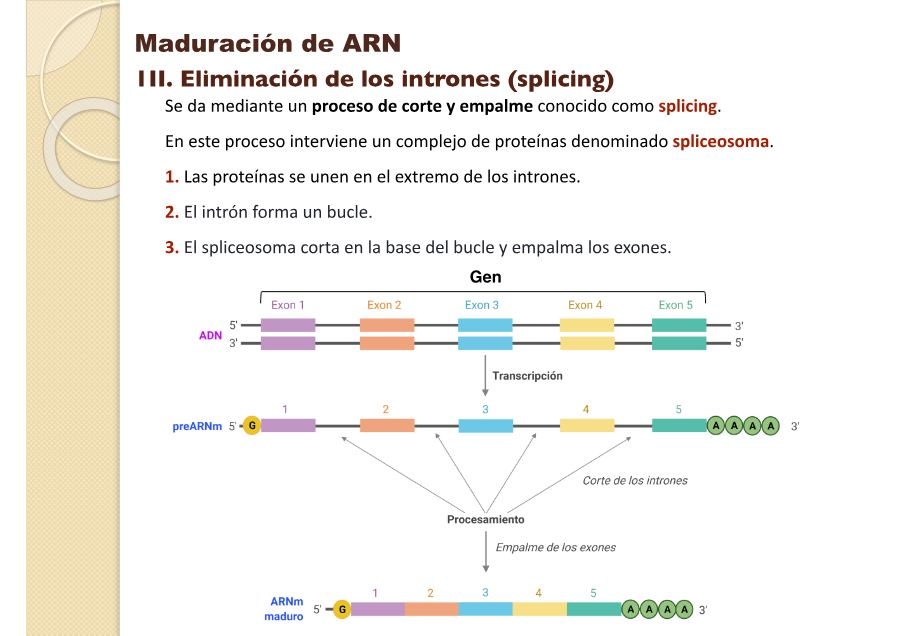
Splicing: se cortan los intrones y se empalman los exones (diap. 87)
Entiéndelo: Es como montar una película: se cortan las escenas que sobran (intrones) y se pegan las buenas (exones).
Truco:Unir, Bucle, Cortar y empalmar.
Ponte a prueba: Explica el splicing: qué es, quién lo hace y sus 3 pasos.
43
Splicing alternativo
Diapositiva 88
Lo que dice la profe
Cuando ocurre el splicing del ARNm, aunque se tienen que eliminar todos los intrones y juntarse los exones, puede ocurrir que se eliminen también algunos exones.
Eso hace que desde la misma secuencia de ADN se puedan formar diferentes ARNm-s y por ende, distintas proteínas.
→ Esto permite codificar un mayor número de proteínas que los genes que tenemos en nuestro ADN.
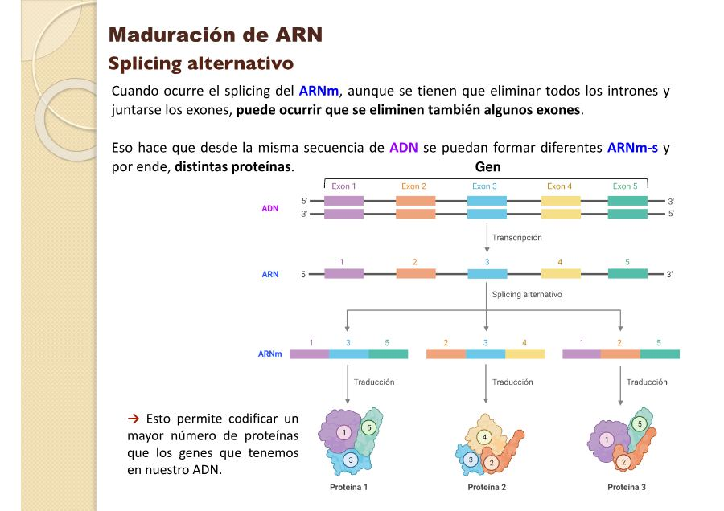
Splicing alternativo: un gen, varias proteínas (diap. 88)
Entiéndelo: Con las mismas escenas puedes montar películas distintas según cuáles quites: un gen, varias proteínas.
Truco:1 gen → varias proteínas.
Ponte a prueba: ¿Qué es el splicing alternativo y qué consecuencia tiene?
44
Traducción: de ARNm a proteína
Diapositivas 90 y 91 · imprescindible
Lo que dice la profe
La traducción es el proceso por el cual se sintetiza una proteína a partir de una molécula de ARNm.
¡Los genes codifican proteínas! ¿De qué están formadas las proteínas? De AMINOÁCIDOS (AA). R = cadena variable y específica de cada AA.
Hay 20 aminoácidos estándar. También existen algunos más raros de encontrar en células eucariotas.
Traducción: «La traducción es el proceso por el cual se sintetiza una proteína a partir de una molécula de ARNm.»
Aminoácidos (AA): Las piezas con las que se construyen las proteínas.
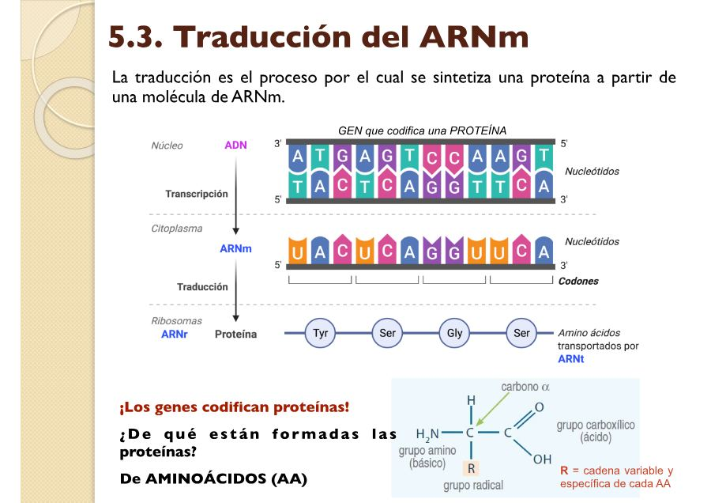
Del gen a la proteína: transcripción y traducción (diap. 90)
Entiéndelo: Las proteínas son collares de aminoácidos. El orden de los aminoácidos lo marca el ARNm, que a su vez viene del gen.
Truco:20 aminoácidos; cada uno se distingue por su cadena R.
Ponte a prueba: ¿Qué es la traducción y de qué están formadas las proteínas? ¿Cuántos aminoácidos estándar hay?
45
El código genético y los codones
Diapositivas 92 y 93 · imprescindible
Lo que dice la profe
¿Cómo pasamos de un lenguaje 4 letras (A, C, G y U) a otro de 20 (AA)? Porque existe un código: el código genético.
El Código Genético es el diccionario que permite traducir una secuencia de nucleótidos a una secuencia de aminoácidos.
Se basa en que una secuencia de 3 nucleótidos codifica para un aminoácido.
Cada trío o triplete de nucleótidos se denomina codón.
¿Cuántos codones posibles existen? 4 bases nitrogenadas (A, C, G y U): 4³ = 64
61 codones codifican para aminoácidos
3 codones son codones de terminación.
Código genético: «El Código Genético es el diccionario que permite traducir una secuencia de nucleótidos a una secuencia de aminoácidos.»
Codón: «Cada trío o triplete de nucleótidos se denomina codón.»
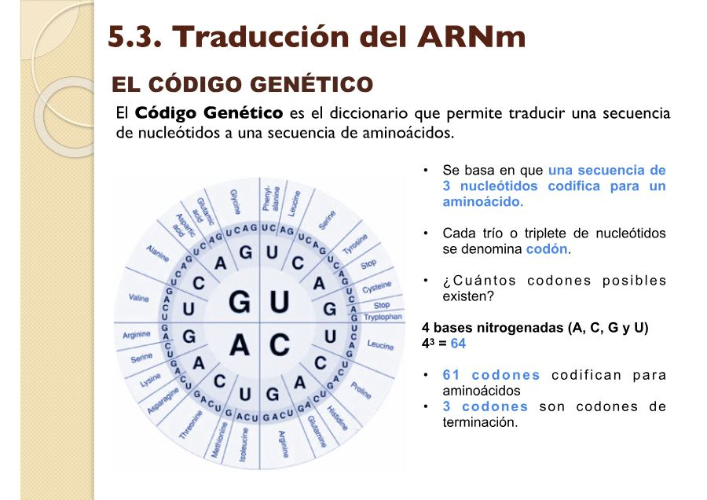
La rueda del código genético (diap. 93)
Entiéndelo: Con palabras de 3 letras y 4 letras posibles salen 4 × 4 × 4 = 64 palabras: de sobra para 20 aminoácidos y 3 señales de «fin».
Truco:4³ = 64 = 61 + 3.
Ponte a prueba: ¿Qué es un codón? ¿Cuántos codones hay, cuántos codifican aminoácidos y cuántos son de terminación?
46
Características del código genético
Diapositiva 94 · imprescindible
Lo que dice la profe
Universal → Es el mismo para todos los organismos.
No ambiguo → Cada codón codifica un único aminoácido.
Degenerado → Hay 20 aminoácidos y 61 codones, en consecuencia → La mayor parte de los aminoácidos están codificados por más de un codón (codones sinónimos)
Continuo y no solapado → En la cadena de ARNm, los codones se disponen de manera secuencial, uno a continuación del otro.
Codones sinónimos: Codones distintos que dan el mismo aminoácido.
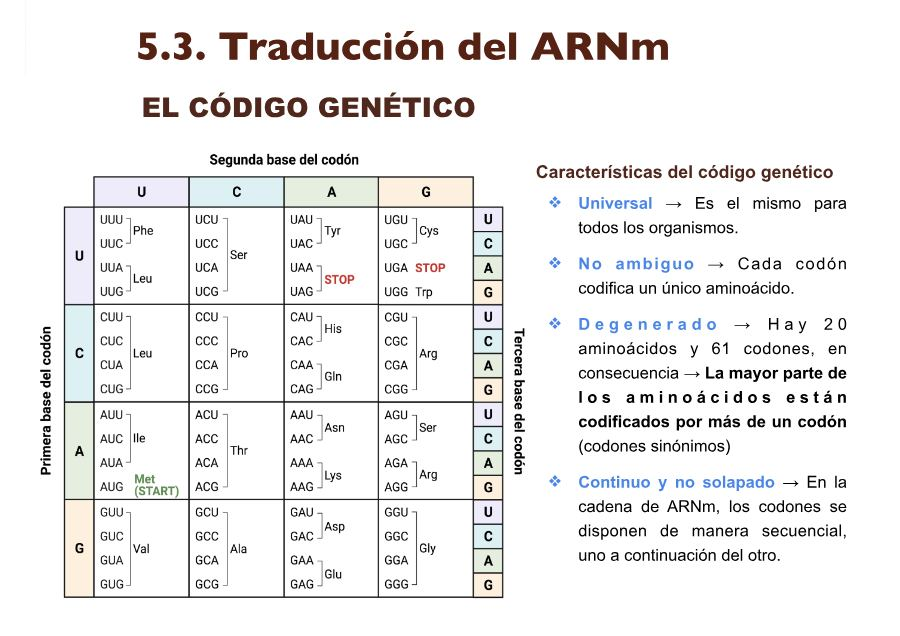
Tabla del código genético y sus características (diap. 94)
Entiéndelo: No ambiguo y degenerado no se contradicen: un codón → un solo aminoácido (no ambiguo), pero un aminoácido ← varios codones (degenerado).
Truco:U-N-D-C: Universal, No ambiguo, Degenerado, Continuo.
Ponte a prueba: Di las 4 características del código genético. ¿Qué diferencia hay entre «no ambiguo» y «degenerado»?
47
Codones de inicio y de terminación
Diapositiva 95 · imprescindible
Lo que dice la profe
Codones importantes del código genético
Todas las secuencias de ARNm que se van a traducir empiezan con el codón AUG que codifica para la Metionina (Met)
Los codones UAA, UAG y UGA son codones de terminación o codones STOP.
Codón STOP: Codón que no da aminoácido: marca el final de la proteína.
Entiéndelo: Toda proteína empieza por metionina (AUG). Y la traducción se para al llegar a cualquiera de los 3 STOP.
Truco:AUG = «¡Arranca!» · STOP: «U Are Away, U Are Gone, U Go Away» (UAA, UAG, UGA).
Ponte a prueba: ¿Cuál es el codón de inicio y qué aminoácido codifica? ¿Cuáles son los codones STOP?
48
Lo que hace falta y los sitios del ribosoma
Diapositiva 96 · imprescindible
Lo que dice la profe
Para que se desarrolle el proceso de síntesis de proteínas se necesita:
1 molécula de ARNm
Los 20 aminoácidos (AA)
Los ribosomas (formados por ARNr y proteínas)
Los ARNt que transportan los AA hasta los ribosomas.
Las enzima(PEPTIDIL TRANSFERASA) que catalizan la unión entre AA.
Los RIBOSOMAS tienen 2 subunidades:
Subunidad menor: Tiene 1 sitio de unión al ARNm
Subunidad mayor: Tiene 3 sitios de unión al ARNt
Sitio A (aminoacil): donde se sitúa el ARNt que lleva el siguiente AA que se va a incorporar en la cadena proteica.
Sitio P (peptidil): donde se sitúa el ARNt que lleva la cadena proteica en crecimiento
Sitio E (exit): donde se sitúa el ARNt que acaba de transferir la cadena en crecimiento al ARNt que lleva el siguiente AA.
Peptidil transferasa: La enzima que une un aminoácido con el siguiente.
Sitios A, P y E: Los tres huecos de la subunidad mayor del ribosoma donde se colocan los ARNt.
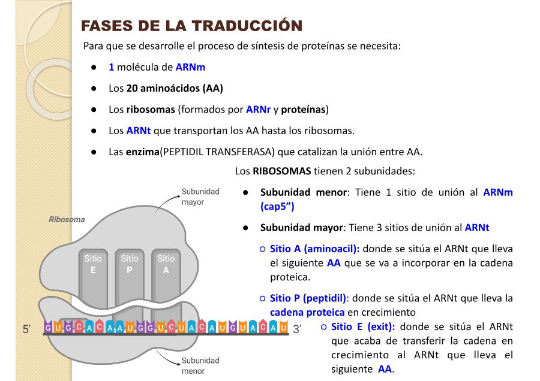
Ribosoma: subunidades y sitios E, P y A (diap. 96)
Entiéndelo: Los ARNt pasan por el ribosoma como en una cinta: entran por A (traen aminoácido), pasan a P (sujetan la cadena) y salen por E.
Truco: Orden de paso: A → P → E = «Antes, Pegado, Exit».
Ponte a prueba: ¿Qué hace falta para la traducción? Explica los sitios A, P y E del ribosoma.
49
Iniciación de la traducción
Diapositiva 100 · imprescindible
Lo que dice la profe
Fase de iniciación: unión del ARNt+Met al ribosoma
El ARNt iniciador (ARNt con Metionina) se une a la subunidad menor del ribosoma y se colocan en el CAP-5’ del ARNm.
Este complejo lee el ARNm hasta encontrar el codón de inicio (AUG).
El ARNt iniciador se une al codón de inicio.
La subunidad mayor del ribosoma se une para formar el complejo de iniciación, y el ARNt queda colocado en el sitio P.
ARNt iniciador: El ARNt que lleva la metionina y empieza la traducción.
Entiéndelo: La subunidad pequeña con la metionina se engancha al gorro (CAP-5’), avanza hasta AUG, y entonces llega la subunidad grande y cierra el «bocadillo».
Truco: El primer ARNt empieza en P, no en A.
Ponte a prueba: Explica los 4 pasos de la iniciación de la traducción. ¿En qué sitio queda el ARNt iniciador?
50
Elongación de la traducción
Diapositivas 101 y 102 · imprescindible
Lo que dice la profe
Fase de elongación:
Comienza cuando se sitúa en el sitio A el segundo aminoacil-ARNt (ARNt+AA) que tiene un anticodón complementario al segundo codón del ARNm.
La enzima peptidil transferasa cataliza la formación del enlace peptídico entre la Met y el segundo AA. De esta forma, el ARNt del sitio P se queda sin AA (Met) y el ARNt del sitio A contiene la cadena en crecimiento.
Formado el enlace peptídico, el ribosoma se desplaza a lo largo del ARNm en dirección 5’ → 3’.
El ARNt iniciador (ahora sin AA), queda situado en el sitio E para separarse del complejo. El ARNt que tiene 2 AA queda situado en el sitio P, y así, el sitio A queda libre para que el siguiente aminoacil-ARNt se una para incorporar el AA correspondiente.
Enlace peptídico: La unión entre dos aminoácidos.
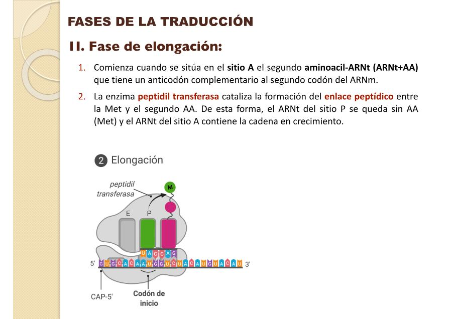
Elongación: el segundo ARNt entra en el sitio A (diap. 101)
Entiéndelo: Entra un ARNt en A, se unen los aminoácidos, el ribosoma avanza un codón, el ARNt vacío sale por E… y se repite.
Truco:Entra, Une, Avanza, Sale: «EUAS».
Ponte a prueba: Explica la elongación de la traducción: qué pasa en los sitios A, P y E.
51
Terminación de la traducción
Diapositivas 103 y 104 · imprescindible
Lo que dice la profe
Fase de terminación:
Se produce cuando el ribosoma llega a un codón STOP (UAA, UGA o UAG)
No existe ningún ARNt que tenga un anticodón complementario a esos codones.
Los factores de liberación reconocen los codones STOP, se sitúan en el sitio A y hacen que la peptidil transferasa corte la unión entre la cadena proteína y el ARNt que la porta.
La proteína se libera, y todo el complejo de traducción se disocia.
Factores de liberación: Proteínas que reconocen el STOP y sueltan la proteína.
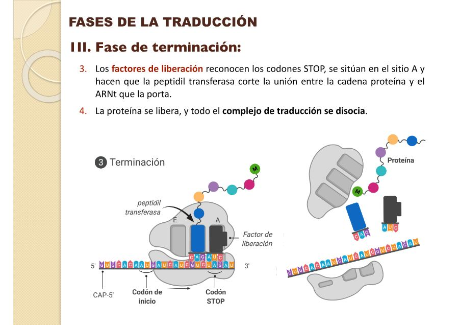
Terminación: factores de liberación en el codón STOP (diap. 104)
Entiéndelo: Al STOP no le corresponde ningún ARNt: en su lugar entra un factor de liberación, que hace que la proteína se suelte y el ribosoma se desmonte.
Truco:STOP = ningún ARNt, entra el factor.
Ponte a prueba: ¿Qué ocurre en la terminación de la traducción? ¿Por qué ningún ARNt se une al codón STOP?
52
Qué es una mutación
Diapositiva 106 · imprescindible
Lo que dice la profe
Mutación: cambio en la secuencia o estructura de ADN que ocurre de manera espontánea.
Se produce un cambio en la información genética, que puede tener consecuencias (positivas o negativas) o no tenerlas.
Mutaciones en células somáticas: las células hijas heredan la mutación.
Mutaciones en células sexuales: la mutación se puede transmitir a la siguiente generación.
Mutación: «Cambio en la secuencia o estructura de ADN que ocurre de manera espontánea.»
Entiéndelo: Si la mutación está en una célula del cuerpo, la heredan sus células hijas; solo si está en un óvulo o espermatozoide puede pasar a los hijos.
Truco:Somática → células hijas; sexual → hijos.
Ponte a prueba: ¿Qué es una mutación? ¿Qué diferencia hay entre una mutación en una célula somática y en una sexual?
53
Cromosómicas y génicas
Diapositivas 106 y 107 · imprescindible
Lo que dice la profe
TIPOS DE MUTACIONES
Mutaciones CROMOSÓMICAS: gran extensión (afectan a muchos genes). Ejemplo: deleciones, inserciones, translocaciones…
Mutaciones GÉNICAS: menor extensión (afectan a un gen y, por tanto, a la proteína que codifica ese gen).
Las mutaciones génicas afectan a uno o varios nucleótidos, en lugar de a fragmentos extensos de ADN como ocurre en las mutaciones cromosómicas. Hay 3 tipos:
Inserciones
Deleciones
Sustituciones
Entiéndelo: Cromosómica = se mueve o se pierde un trozo grande (muchos genes). Génica = cambian una o pocas letras de un solo gen.
Ponte a prueba: Diferencia las mutaciones cromosómicas de las génicas y di los 3 tipos de mutaciones génicas.
54
Inserción y deleción: el marco de lectura
Diapositiva 108 · imprescindible
Lo que dice la profe
Inserción: Ganancia de uno o varios nucleótidos en la secuencia de ADN. Cuando ocurre en una región codificante (exón) puede haber un cambio en el marco de lectura que afecta al mRNA y a la proteína que codifica.
Deleción: Pérdida de uno o varios nucleótidos en la secuencia de ADN. Cuando ocurre en una región codificante (exón) puede haber un cambio en el marco de lectura que afecta al mRNA y a la proteína que codifica.
Si la inserción/deleción es de 3 nucleótidos o múltiplo de 3: No hay cambio en el marco de lectura. Hay una adición o pérdida de aminoácidos.
Marco de lectura: La forma de agrupar el ARNm de 3 en 3 desde el AUG.
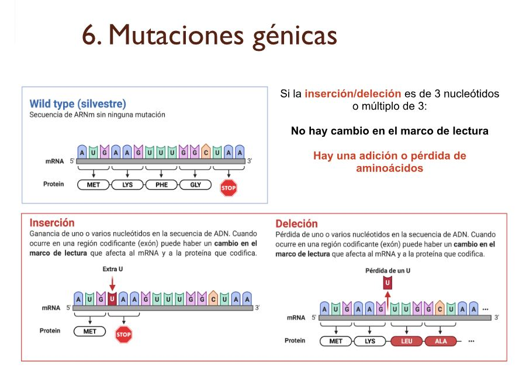
Inserción y deleción: cambio del marco de lectura (diap. 108)
Entiéndelo: Se lee de 3 en 3: si metes o quitas 1 letra, todos los tríos siguientes se descolocan. Si metes o quitas 3, solo sobra o falta un aminoácido.
Truco: «EL GATO SAL TÓ»: quita una letra y todo lo que sigue deja de tener sentido.
Ponte a prueba: ¿Qué es una inserción y una deleción? ¿Cuándo no cambia el marco de lectura?
55
Sustituciones: silenciosa, errónea y sin sentido
Diapositiva 109 · imprescindible
Lo que dice la profe
Sustitución: Se sustituye algún nucleótido por otro. Cuando ocurre en una región codificante (exón), las sustituciones se clasifican en 3 grupos según sus consecuencias en la secuencia de la proteína.
M. silenciosa: Un nucleótido es sustiuido por otro dando lugar a un codón que codifica para el mismo aminoácido. La secuencia de la proteína NO cambia.
M. errónea: Un nucleótido es sustiuido por otro dando lugar a un codón que codifica para otro aminoácido. La secuencia de la proteína SÍ cambia.
M. sin sentido: Un nucleótido es sustiuido por otro dando lugar a un codón STOP. La secuencia de la proteína SÍ cambia, se ACORTA.
*Si la mutación ocurre en una región no codificante no debería haber consecuencias
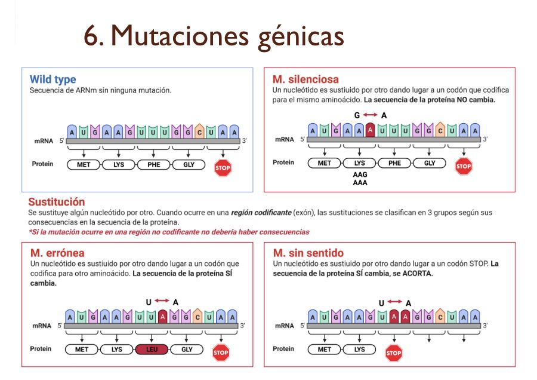
Mutación silenciosa, errónea y sin sentido (diap. 109)
Entiéndelo: La silenciosa funciona gracias a que el código es degenerado: AAG y AAA dan los dos lisina. La sin sentido mete un STOP antes de tiempo.
Truco:Silenciosa = igual · Errónea = otro AA · Sin sentido = STOP, más corta.
Ponte a prueba: Explica los 3 tipos de sustitución según su efecto en la proteína.
56
Consecuencias de las mutaciones
Diapositiva 110
Lo que dice la profe
Estas mutaciones en el ADN, afectarán más o menos la proteína que se forma a partir del ARNm, dependiendo de qué aminoácido afecten.
Esto dependerá del papel que juegue el aminoácido en la estructura y función de la proteína a sintetizar.
Entiéndelo: No todos los aminoácidos pesan igual: si el cambiado es clave para la forma o la función de la proteína, la mutación será grave.
Truco: Gravedad = qué aminoácido toca.
Ponte a prueba: ¿De qué depende que una mutación afecte mucho o poco a la proteína?
Preguntas rápidas
Piensa la respuesta antes de abrir.
¿Partes de un nucleótido?
Fosfato, pentosa y base nitrogenada.
¿Bases púricas?
Adenina y guanina.
¿Base solo del ARN?
Uracilo (U).
¿Cuándo ocurre?
En la fase S de la interfase.
¿Quién abre la hélice?
La helicasa.
¿Quién sintetiza la nueva hebra?
La ADN polimerasa III, siempre 5’→3’.
¿Quién une los fragmentos de Okazaki?
La ligasa.
¿Dónde empieza la transcripción?
En el promotor.
¿Qué ARN polimerasa hace el ARNm?
La II.
¿Tres modificaciones de la maduración?
CAP-5’, cola poliA y splicing.
¿Codón de inicio?
AUG (metionina).
¿Codones STOP?
UAA, UAG y UGA.
¿En qué sitio entra cada nuevo ARNt?
En el sitio A.
¿Mutación que da un STOP?
Sin sentido: la proteína se acorta.
Preguntas de desarrollo
La replicación del ADN
Diapositivas 53 a 77
Explica la replicación del ADN: características, fases y enzimas.
Ver la respuesta modelo
Duplica una molécula de ADN en dos idénticas, en la fase S. Es semiconservativa, empieza en un origen (uno en procariotas, varios en eucariotas), es bidireccional y semidiscontinua.
Iniciación: proteínas reconocen el origen, las helicasas rompen los puentes de H y forman la burbuja, las SSBP mantienen separadas las cadenas y la girasa y la topoisomerasa relajan la tensión.
Elongación: la primasa coloca primers, la ADN polimerasa III sintetiza 5’→3’, continua en la hebra conductora y discontinua en la retardada (fragmentos de Okazaki); la ADN polimerasa I sustituye los primers por ADN y la ligasa une los fragmentos.
La traducción
Diapositivas 90 a 104
Explica la traducción: qué se necesita, los sitios del ribosoma y sus 3 fases.
Ver la respuesta modelo
Síntesis de una proteína a partir de un ARNm. Necesita ARNm, 20 AA, ribosomas, ARNt y peptidil transferasa. Ribosoma: subunidad menor (une el ARNm) y mayor con sitios A (ARNt con el siguiente AA), P (cadena en crecimiento) y E (salida).
Iniciación: ARNt+Met con la subunidad menor en el CAP-5’, busca AUG, se une la subunidad mayor y el ARNt queda en P. Elongación: entra un ARNt en A, la peptidil transferasa forma el enlace peptídico, el ribosoma avanza 5’→3’ y el ARNt vacío sale por E. Terminación: codón STOP (UAA, UGA, UAG), los factores de liberación se sitúan en A y la proteína se libera.
Transcripción y maduración
Diapositivas 78 a 88
Explica la transcripción y la maduración del ARN.
Ver la respuesta modelo
Síntesis de ARN con una cadena de ADN como molde, por la ARN polimerasa (una en procariotas; tres en eucariotas: I ARNr, II ARNm, III ARNt). Iniciación: reconoce el promotor. Elongación: ribonucleótidos 5’→3’ sobre la cadena molde; el ARN es como la codificante con U en vez de T. Terminación: terminador.
En eucariotas el ARN madura: CAP-5’, cola poliA (100-200 A) y splicing (el spliceosoma quita intrones y empalma exones).
Código genético y mutaciones
Diapositivas 92 a 110
Describe el código genético y los tipos de mutaciones génicas.
Ver la respuesta modelo
Diccionario de nucleótidos a aminoácidos: codón = 3 nucleótidos; 4³ = 64 (61 AA + 3 STOP). Universal, no ambiguo, degenerado, continuo y no solapado. Inicio AUG (Met); STOP UAA, UAG, UGA.
Mutaciones génicas: inserción y deleción (cambian el marco de lectura salvo si son de 3 o múltiplo de 3) y sustitución: silenciosa (mismo AA), errónea (otro AA) y sin sentido (STOP, proteína más corta).
ADN y ARN, doble hélice y empaquetamiento
Diapositivas 6 a 48
Compara ADN y ARN y describe la doble hélice y su empaquetamiento.
Ver la respuesta modelo
ADN: desoxirribosa; A, T, G, C; doble hélice antiparalela; millones de pares de bases; almacena y transmite. ARN: ribosa; A, U, G, C; cadena simple; mucho más pequeño; expresa la información.
«Son las unidades estructurales que forman los ácidos nucleicos y hacen posible el almacenamiento y transmisión de la información genética. (diap. 8)»
¿De qué átomos está formado el grupo fosfato?
Grupo fosfato
1 átomo de fósforo (centro)
4 átomos de oxígeno (vértices)
¿Qué pentosa lleva el ADN y cuál el ARN?
Pentosa (azúcar):
Ribosa → ARN
Desoxirribosa → ADN
Clasifica las 5 bases nitrogenadas y di en qué ácido nucleico está cada una.
Bases nitrogenadas (5 tipos):
Tipos
Base nitrogenada
Ácido Nucleico
PÚRICAS
ADENINA, GUANINA
ADN y ARN
PIRIMIDÍNICAS
CITOSINA
ADN y ARN
PIRIMIDÍNICAS
TIMINA
ADN
PIRIMIDÍNICAS
URACILO
ARN
¿Cómo se llama el enlace que une un nucleótido con el siguiente?
ENLACE FOSFODIESTER
Fragmento de ácido nucleico
Di las propiedades fisicoquímicas de los ácidos nucleicos. ¿Es reversible la desnaturalización?
Fuertemente ácidos en solución acuosa (por los grupos fosfato).
Elevada viscosidad.
La unión de dos cadenas complementarias de ácidos nucleicos se unen mediante puentes de hidrógeno entre las bases nitrogenadas → hibridación: esto puede ocurrir tanto en ADN como en ARN.
Las dos cadenas de la doble hélice de ADN se pueden separar elevando la temperatura o el pH → desnaturalización: rompen los puentes de H entre las bases nitrogenadas complementarias.
La desnaturalización es reversible si se baja de nuevo la temperatura o el pH → renaturalización.
¿Cómo define la diapositiva: «Hibridación»?
«La unión de dos cadenas complementarias de ácidos nucleicos se unen mediante puentes de hidrógeno entre las bases nitrogenadas (diap. 20)»
¿Cómo define la diapositiva: «Desnaturalización»?
«Las dos cadenas de la doble hélice de ADN se pueden separar elevando la temperatura o el pH (diap. 21)»
Di las 3 características del ADN.
Largas cadenas de desoxirribonucléotidos formados por el grupo fosfato, una desoxirribosa y 4 tipos de bases nitrogenadas (A, T, G y C).
Tamaño: depende del número de nucleótidos. Las moléculas de ADN que forman los cromosomas son de gran tamaño (millones de pares de bases).
Secuencia de bases nitrogenadas (orden de las bases y la proporción de cada una): depende de cada especie.
¿Qué es la estructura primaria del ADN y qué hay en sus extremos 5’ y 3’?
ESTRUCTURA PRIMARIA del ADN: es la secuencia de bases nitrogenadas de la cadena de nucleótidos leídas en dirección 5’ → 3’.
5’ extremo fosfato
3’ extremo pentosa
Secuencia: (5’) A C T G (3’)
¿Qué bases son complementarias y cuántos puentes de H forma cada pareja? Escribe la complementaria de 5’ ACTG 3’.
Las bases nitrogenadas complementarias se unen mediante puentes de H en función de su tamaño y estructura. Son complementarias:
A y T → 2 puentes de H
C y G → 3 puentes de H
Secuencia: (5’) A C T G (3’) / (3’) T G A C (5’) - complementaria
Para que la unión sea estable, los 2 nucleótidos que portan las bases complementarias han de tener sus fosfatos en posiciones opuestas.
¿Quién propuso el modelo de la doble hélice, en qué año y con los resultados de quién?
En 1953 Watson y Crick, junto con los resultados de Wilkins y Rosalind Franklin, propusieron un modelo para explicar la estructura del ADN. Este modelo permite explicar el principio de complementariedad y sostiene que el ADN es una doble hélice.
Describe la estructura secundaria del ADN: sus 6 características.
Es la doble hélice del ADN formada por las dos cadenas complementarias de nucleótidos. La secuencia de cada cadena es la estructura primaria. Cuando las cadenas complementarias se unen obtenemos la estructura secundaria.
Doble hélice se forma alrededor un eje central.
Las 2 cadenas son antiparalelas 5’-3’ vs. 3’-5’
La secuencia de bases nitrogenadas de ambas cadenas es complementaria. Si se conoce la secuencia de una de las cadenas o hebras, se puede deducir la otra.
Ambas cadenas se mantienen unidas por puentes de H.
Las bases nitrogenadas se encuentran en el interior de la estructura. En el exterior se sitúan los fosfatos y la desoxirribosa.
Un giro de 360 ºC= 10 nucleótidos
¿Dónde está la mayor parte del ADN eucariota y a qué dos tipos de proteínas se asocia?
ADN CROMOSÓMICO NUCLEAR
La mayor parte del ADN de las células eucariotas se encuentra en el núcleo.
El ADN no se encuentra libre, sino que está asociado a proteínas básicas que compactan el ADN. Dos tipos:
Histonas: Proteínas con una función estructural y reguladora.
No histonas: Proteínas muy heterogéneas con funciones estructurales, enzimáticas y reguladoras.
¿Cómo define la diapositiva: «Histonas»?
«Proteínas con una función estructural y reguladora. (diap. 26)»
¿Cómo define la diapositiva: «No histonas»?
«Proteínas muy heterogéneas con funciones estructurales, enzimáticas y reguladoras. (diap. 26)»
¿Qué es un nucleosoma y qué es la fibra de cromatina?
NIVELES DE LA ESTRUCTURA TERCIARIA:
Un nucleosoma es la estructura cilíndrica formada por un octámero de histonas (8 histonas) sobre la que se enrolla la doble hélice de ADN.
La molécula de ADN asociada a las histonas se denomina fibra de cromatina “Collar de perlas”
¿Cómo define la diapositiva: «Nucleosoma»?
«Un nucleosoma es la estructura cilíndrica formada por un octámero de histonas (8 histonas) sobre la que se enrolla la doble hélice de ADN. (diap. 28)»
Ordena los niveles de empaquetamiento del ADN hasta el cromosoma metafásico. ¿Cuántos nucleosomas tiene cada vuelta del solenoide?
La fibra de cromatina, a su vez, se enrolla sobre sí misma formando el solenoide.
Cada vuelta del solenoide tiene 6 nucleosomas con 6 histonas H1. Es el nivel de empaquetamiento más bajo de los cromosomas.
En el momento de la división celular (MITOSIS), las fibras de cromatina se ordenan y experimentan varios niveles de superenrollamiento hasta formar el cromosoma metafásico.
Diferencia la eucromatina de la heterocromatina: compactación, transcripción y cuándo se replican.
ADN cromosómico: en el núcleo. En humanos, 20.000 - 25.000 genes.
Eucromatina: cromatina poco compactada y que presenta una gran concentración de genes. Normalmente, aunque no siempre, estos genes se encuentran en transcripción activa.
Heterocromatina: cromatina más compactas y condensadas, por lo que no se puede dar la transcripción.
La eucromatina se replica al inicio de la fase S, mientras que la heterocromatina se replica hacia el final fase S.
¿Cómo define la diapositiva: «Eucromatina»?
«Cromatina poco compactada y que presenta una gran concentración de genes. (diap. 34)»
¿Cómo define la diapositiva: «Heterocromatina»?
«Cromatina más compactas y condensadas, por lo que no se puede dar la transcripción. (diap. 34)»
Compara el ADN mitocondrial y el de cloroplastos: forma, tamaño, número de genes y replicación.
ADN mitocondrial: en todos los organismos eucariotas.
ADN de cloroplastos: Sólo en organismos fotosintéticos.
ADN mitocondrial (ADNmt): ADN bicatenario (doble hélice) y circular de 16,5 kb (en humanos).
Suele haber varias copias de ADNmt en cada mitocondria.
Contiene 37 genes que codifican para ARN ribosómico, ARN de transferencia y proteínas implicadas en los procesos que tienen lugar en la mitocondria como la respiración celular.
Se replica de manera independiente respecto al ADN nuclear.
ADN de cloroplastos (ADNcp): ADN bicatenario (doble hélice) y circular de entre 120 y 160 kb.
Suele haber varias moléculas de ADN circular en cada cloroplasto.
Contiene en torno a 150 genes (depende de la especie), que codifican para ARN ribosómico, ARN de transferencia y proteínas implicadas en los procesos que tienen lugar en la cloroplasto, especialmente en la fotosíntesis.
Se replica de manera independiente respecto al ADN nuclear.
¿Cómo es el ADN de las bacterias? ¿Qué son los plásmidos?
ADN de procariotas (bacterias): ADN bicatenario (doble hélice) y circular.
Un sólo cromosoma circular que está libre en el citoplasma.
No está unido a proteínas, por tanto no forma cromatina.
Además del cromosoma, muchos procariotas presentan pequeñas moléculas de ADN circular denominadas PLÁSMIDOS.
¿Cómo define la diapositiva: «Plásmidos»?
«Pequeñas moléculas de ADN circular (diap. 38)»
Di las características del ARN: composición, tamaño y función.
Cadenas de ribonucléotidos formados por el grupo fosfato, una ribosa y 4 tipos de bases nitrogenadas (A, U, G y C).
Tamaño: depende del número de nucleótidos, pero son mucho más pequeñas que las moléculas de ADN (cientos o miles de pares de bases.
Función: controla la síntesis de proteínas a partir de la información contenida en el ADN.
Explica las estructuras primaria, secundaria y terciaria del ARN.
ESTRUCTURA PRIMARIA del ARN: Es la secuencia de bases nitrogenadas de la cadena simple de nucleótidos leídas en dirección 5’ → 3’.
ESTRUCTURA SECUNDARIA del ARN: La cadena simple de ARN puede plegarse y presentar regiones con bases apareadas (ej. ARN de transferencia). Las bases NO siempre serán complementarias (A-U, G-C, G-U). Aunque existan zonas apareadas, los extremos 5’ y 3’ que marcan el inicio y el final de la molécula permanecerán libres.
ESTRUCTURA TERCIARIA del ARN: Consiste en un plegamiento de la estructura secundaria, normalmente por asociación con proteínas.
¿Qué es el ARNm y qué función tiene?
ARN mensajero (ARNm). En eucariotas:
Es una copia exacta de la secuencia de un gen de ADN.
Porta la información para la síntesis de una proteína.
¿Qué función tiene el ARNt? Describe su forma y sus dos brazos importantes.
Transportan los aminoácidos hasta los ribosomas para ir formando la cadena proteica.
Estructura secundaria en forma de trébol, que se pliega en una estructura terciaria en forma de L.
Brazo aceptor: Sitio de unión para el aminoácido (CCA-3’)
Brazo anticodón: Contiene el anticodón correspondiente al aminoácido que lleva. Este anticodón reconoce el codón de ARNm que indica el aminoácido que se tiene que añadir a la proteína.
¿Qué porcentaje del ARN es ARNr, qué forma y qué subunidades tiene el ribosoma?
Es el ARN mayoritario en las células (aproximadamente el 80% del ARN).
Estructura secundaria muy compleja, con muchas horquillas y bucles.
Combinado con ciertas proteínas forma los ribosomas. Orgánulos citoplasmáticos responsables de la síntesis de proteínas.
Subunidad 60: 3 moléculas de ARNr, 49 proteínas
Subunidad 40: 1 moléculas de ARNr, 33 proteínas
Di los 3 procesos del flujo de la información genética y qué se obtiene en cada uno.
DOGMA CENTRAL DE LA BIOLOGÍA: Del GEN a la PROTEÍNA.
El ADN almacena la información genética de un individuo, la transmite a los descendientes y dirige la síntesis de proteínas. Para llevar esto a cabo se dan distintos procesos:
Replicación: Duplicación del material genético, ADN (para la división celular: mitosis y meiosis).
Transcripción: Síntesis de ARNm partiendo de ADN.
Traducción: Síntesis de proteínas partiendo de ARNm.
¿Qué es la replicación y en qué momento del ciclo celular ocurre?
Proceso por el cual una molécula de ADN se duplica para dar lugar a dos moléculas de ADN idénticas. Ocurre en la fase S de la interfase, cuando la célula se prepara para dividirse por mitosis o meiosis.
¿Por qué la replicación es semiconservativa? ¿Cuántos orígenes de replicación hay en procariotas y en eucariotas?
Características generales de la replicación:
Semiconservativa: Una hebra viene de la molécula original y la otra se sintetiza.
Comienza en un origen de replicación: el inicio de la replicación se da en puntos concretos.
En procariotas: un único origen de replicación.
En eucariotas: más de un origen de replicación
¿Cómo define la diapositiva: «Semiconservativa»?
«Una hebra viene de la molécula original y la otra se sintetiza. (diap. 54)»
¿Por qué la replicación es semidiscontinua? Explica la hebra conductora y la retardada.
Bidireccional: La síntesis de las nuevas cadenas se produce en ambos sentidos usando las 2 cadenas de ADN como molde.
Semidiscontinua: La síntesis de las cadenas nuevas se produce siempre en dirección 5’ → 3’. Problema: las hebras de ADN son antiparalelas.
Se forma la burbuja de replicación, y el proceso ocurre hacia ambos lados y en las dos cadenas a la vez.
Una de las cadenas se sintetiza de manera continua (5’-3’): Cadena líder, conductora o continua.
La otra hebra se sintetiza de manera discontinua, en forma de fragmentos (fragmentos de Okazaki): Hebra retardada.
Explica los 4 primeros pasos de la iniciación de la replicación.
La replicación se divide en 2 fases: 1. INICIACIÓN 2. ELONGACIÓN.
Fase de iniciación: formación de las horquillas de replicación
La replicación del ADN empieza con una secuencia de nucleótidos, al cual se denomina “origen de replicación”.
Unas proteínas específicas reconocen el origen de replicación y se unen a él. La unión de estas proteínas hace que se activen las helicasas.
Las helicasas rompen los puentes de hidrógeno que hay entre las bases nitrogenadas de las dos cadenas complementarias del ADN y forman la burbuja de replicación.
Las dos helicasas empiezan a realizar su función a partir del punto de origen de replicación. Una en un sentido y la otra en el otro sentido. De esta manera la replicación del ADN es bidireccional.
¿Qué hacen las SSBP? ¿Y la girasa y la topoisomerasa?
Para que esta estructura se mantenga, las proteínas de unión a cadena sencilla (SSBP) se unen a las cadenas desenrolladas.
Este desenrollamiento provoca tensión en las zonas próximas a la burbuja. Por ello, la girasa y la topoisomerasa actúan relajando esa tensión.
Proteínas de unión a cadena sencilla (SSB): se unen a las cadenas desenrolladas evitando que se vuelva a formar la doble hélice.
¿Qué hace la primasa? ¿Cuántos primers necesita cada hebra?
Fase de elongación: síntesis de las nuevas hebras de ADN
La primasa (ARN polimerasa) sintetiza los primers o cebadores en dirección 5’ → 3’.
Hebra conductora: Un único primer en el origen de la replicación (5’-3’)
Hebra retardada: Varios primers. A medida que avanza la horquilla, se van sintetizando nuevos cebadores que darán lugar a fragmentos de Okazaki.
Primasa: Es una enzima con función ARN polimerasa que sintetiza fragmentos cortos de ARN (10 nucleótidos), denominados cebadores o primers. Los primers son complementarios de zonas concretas de ADN y sirven para que la ADN polimerasa empiece a hacer la nueva cadena de ADN copiando la original.
¿Cómo define la diapositiva: «Primer o cebador»?
«fragmentos cortos de ARN (10 nucleótidos), denominados cebadores o primers (diap. 70)»
¿Qué hace la ADN polimerasa III y en qué dirección trabaja siempre?
Una vez que se colocan los primers, la ADN polimerasa III llega y empieza a sintetizar las nuevas hebras en dirección 5’ → 3’.
Hebra conductora: Elongación continua (5’-3’)
Hebra retardada: Elongación discontinua (5’-3’) → se van sintetizando los fragmentos de Okazaki hasta alcanzar el primer siguiente
ADN polimerasa: Enzima que añade nuevos nucleótidos al extremo OH-3’ de una cadena en crecimiento, es decir, añade nucleótidos en dirección 5’ → 3’ siempre.
La secuencia de nucleótidos que se incorpora es complementaria de la secuencia de cadena molde que se está leyendo.
Tanto procariotas como eucariotas presentan varios tipos de polimerasas.
¿Qué hacen la ADN polimerasa I y la ligasa?
Eliminación de primers y unión de todos los fragmentos de ADN.
ADN polimerasa I: Actividad exonucleasa para retirar los cebadores y actividad polimerasa para sustituirlos por ADN.
Ligasa: tras la ADN polimerasa I, la ligasa se encargará de ir uniendo los fragmentos de ADN de la hebra que se acaba de copiar.
Ordena las enzimas de la replicación y di la función de cada una.
Enzimas que actúan en la replicación
Helicasa: Desenrolla y separa las 2 cadenas de la doble hélice en ambos sentidos. Las nuevas hebras que van en la misma dirección que las helicasas serán hebras continuas. En cambio, las que van en dirección opuesta serán las retardadas.
Topoisomerasa: La separación de las dos cadenas genera un superenrollamiento en el resto de la hélice. Esta enzima junto con la girasa se encargan de relajar esa tensión extra.
Proteínas de unión a cadena sencilla (SSB): Se unen a las cadenas desenrolladas evitando que se vuelva a formar la doble hélice
Primasa: sintetiza fragmentos cortos de ARN (10 nucleótidos), denominados cebadores o primers.
ADN polimerasa: La ADN polimerasa reconoce los primers para iniciar la elongación. Hebra continua: requiere un único primer en el origen de replicación. Hebra retardada: requiere varios primers (un primer para cada fragmento de Okazaki).
Hay otra ADN polimerasa que elimina los primers (RNA) y los sustituye por nucleótidos de ADN. También dirección 5’--3’
Ligasa: Une los fragmentos de ADN entre sí.
Di las 4 peculiaridades de la replicación en eucariotas. ¿Por qué se acortan los telómeros?
PECULIARIDADES DE LA REPLICACIÓN EN EUCARIOTAS
Múltiples orígenes de replicación
Varios tipos de ADN polimerasas que se reparten las tareas.
Durante la replicación también se unen las histonas y se estructuran los nucleosomas.
Reducción de telómeros.
Acortamiento de los telómeros
División celular
↓longitud de los telómeros
Final del telómero: Fragmento que se pierde porque no se puede copiar
¿Qué es la transcripción, cuáles son sus fases y qué diferencia hay entre procariotas y eucariotas?
La transcripción es el proceso por el cual se sintetiza una molécula de ARN utilizando como molde una cadena de ADN.
FASES DE LA TRANSCRIPCIÓN: 1. INICIACIÓN 2. ELONGACIÓN 3. TERMINACIÓN
En procariotas: se obtienen directamente moléculas maduras de ARN.
En eucariotas: se obtienen moléculas de ARN que tienen que sufrir modificaciones para madurar.
¿Cómo define la diapositiva: «Transcripción»?
«La transcripción es el proceso por el cual se sintetiza una molécula de ARN utilizando como molde una cadena de ADN. (diap. 78)»
¿Cuántas ARN polimerasas hay en procariotas y en eucariotas? ¿Qué sintetiza cada una?
La enzima principal de este proceso es la ARN polimerasa. Función: síntesis de ARN usando una cadena de ADN como molde. La ARN polimerasa produce la copia de ARN en dirección 5’ → 3’.
Células procariotas: Un único tipo de ARN polimerasa
Células eucariotas: 3 tipos de ARN polimerasas:
ARN polimerasa I: Síntesis de la mayor parte del ARNr.
ARN polimerasa II: Síntesis de ARNm.
ARN polimerasa III: Síntesis del ARNt y una parte del ARNr.
¿Qué ocurre en la fase de iniciación de la transcripción? ¿Qué es el promotor?
Fase de iniciación:
La ARN polimerasa reconoce una secuencia de bases específica llamada promotor, que se encuentra al inicio de un gen → Cada gen tiene su propio promotor.
Después de unirse al promotor, las dos hebras de ADN se separan y comienza la síntesis de ARN.
Si la cadena codificante es 5’ ATGC 3’, ¿cómo es el ARN? ¿Qué cadena se usa de molde?
Fase de elongación:
La ARN polimerasa añade ribonucleótidos en dirección 5’ → 3’, tomando una hebra de ADN como molde (cadena molde 3’ → 5’).
El transcrito de ARN tiene la misma información que la cadena de ADN contraria a la molde (cadena codificante) en el gen, pero contiene la base uracilo (U) en lugar de timina (T).
En la REPLICACIÓN, la unión de nucleótidos es similar.
¿Qué pasa en la terminación de la transcripción? ¿Por qué en procariotas se puede traducir enseguida?
Fase de terminación:
La síntesis de ARN cuando la ARN polimerasa alcanza una secuencia específica llamada terminador.
En este punto se separa el ARN de la cadena de ADN y de la ARN polimerasa.
Después de la terminación, la transcripción ha concluido.
Un transcrito de ARN que está listo para su uso en la traducción → ARNm.
En procariotas, los transcritos de ARNm están listos para su traducción inmediatamente después de la transcripción. Además, al encontrarse en el citoplasma (no hay núcleo), los ribosomas pueden empezar directamente a sintetizar las proteínas.
Di los 3 motivos por los que el ARN de eucariotas tiene que madurar.
En eucariotas, el ARN requiere modificaciones para dar lugar a las moléculas maduras de ARN (ARNm, ARNt y ARNr) → Este proceso se conoce como MADURACIÓN DEL ARN.
¿Por qué el ARN de eucariotas requiere modificaciones?
Porque el ARN, al ser monocatenario, se degrada con mucha facilidad. Por ello, se modifica para evitar su degradación durante la transcripción.
Porque el ARN se sintetiza en el núcleo y para salir al citoplasma necesita modificar un poco su estructura para poder atravesar la membrana del núcleo.
Porque los genes (ADN) tienen información relacionada con la síntesis de proteínas (a estas regiones se les llaman exones), pero también tienen regiones que no tienen este tipo de información (intrones). Por tanto, cuando se produce el ARNm hay que eliminar estas últimas regiones.
¿Qué son el CAP-5’ y la cola poliA? ¿Dónde se añaden y para qué sirven?
I. Adición de un CAP-5’ al inicio de la transcripción. Se añade una caperuza de metilguanosina en el extremo 5’ (al inicio del transcrito) → El cap 5' es un nucleótido modificado de guanina (G) que se añade al primer nucleótido del transcrito durante la transcripción. El cap 5':
Evita que el ARN se degrade durante la elongación.
Ayuda al ribosoma a unirse al ARNm y a comenzar a leerlo para hacer una proteína.
II. Adición de una cola de poliadeninas (poliA) al final de la transcripción. Se añade una cola de adeninas (cola poliA) en el extremo 3’ (al final del transcrito) → entre 100-200 adeninas. La cola poliA:
Permite al ARN maduro salir al citoplasma.
Explica el splicing: qué es, quién lo hace y sus 3 pasos.
III. Eliminación de los intrones (splicing). Se da mediante un proceso de corte y empalme conocido como splicing. En este proceso interviene un complejo de proteínas denominado spliceosoma.
Las proteínas se unen en el extremo de los intrones.
El intrón forma un bucle.
El spliceosoma corta en la base del bucle y empalma los exones.
¿Qué es el splicing alternativo y qué consecuencia tiene?
Cuando ocurre el splicing del ARNm, aunque se tienen que eliminar todos los intrones y juntarse los exones, puede ocurrir que se eliminen también algunos exones.
Eso hace que desde la misma secuencia de ADN se puedan formar diferentes ARNm-s y por ende, distintas proteínas.
→ Esto permite codificar un mayor número de proteínas que los genes que tenemos en nuestro ADN.
¿Qué es la traducción y de qué están formadas las proteínas? ¿Cuántos aminoácidos estándar hay?
La traducción es el proceso por el cual se sintetiza una proteína a partir de una molécula de ARNm.
¡Los genes codifican proteínas! ¿De qué están formadas las proteínas? De AMINOÁCIDOS (AA). R = cadena variable y específica de cada AA.
Hay 20 aminoácidos estándar. También existen algunos más raros de encontrar en células eucariotas.
¿Cómo define la diapositiva: «Traducción»?
«La traducción es el proceso por el cual se sintetiza una proteína a partir de una molécula de ARNm. (diap. 90)»
¿Qué es un codón? ¿Cuántos codones hay, cuántos codifican aminoácidos y cuántos son de terminación?
¿Cómo pasamos de un lenguaje 4 letras (A, C, G y U) a otro de 20 (AA)? Porque existe un código: el código genético.
El Código Genético es el diccionario que permite traducir una secuencia de nucleótidos a una secuencia de aminoácidos.
Se basa en que una secuencia de 3 nucleótidos codifica para un aminoácido.
Cada trío o triplete de nucleótidos se denomina codón.
¿Cuántos codones posibles existen? 4 bases nitrogenadas (A, C, G y U): 4³ = 64
61 codones codifican para aminoácidos
3 codones son codones de terminación.
¿Cómo define la diapositiva: «Código genético»?
«El Código Genético es el diccionario que permite traducir una secuencia de nucleótidos a una secuencia de aminoácidos. (diap. 93)»
¿Cómo define la diapositiva: «Codón»?
«Cada trío o triplete de nucleótidos se denomina codón. (diap. 93)»
Di las 4 características del código genético. ¿Qué diferencia hay entre «no ambiguo» y «degenerado»?
Universal → Es el mismo para todos los organismos.
No ambiguo → Cada codón codifica un único aminoácido.
Degenerado → Hay 20 aminoácidos y 61 codones, en consecuencia → La mayor parte de los aminoácidos están codificados por más de un codón (codones sinónimos)
Continuo y no solapado → En la cadena de ARNm, los codones se disponen de manera secuencial, uno a continuación del otro.
¿Cuál es el codón de inicio y qué aminoácido codifica? ¿Cuáles son los codones STOP?
Codones importantes del código genético
Todas las secuencias de ARNm que se van a traducir empiezan con el codón AUG que codifica para la Metionina (Met)
Los codones UAA, UAG y UGA son codones de terminación o codones STOP.
¿Qué hace falta para la traducción? Explica los sitios A, P y E del ribosoma.
Para que se desarrolle el proceso de síntesis de proteínas se necesita:
1 molécula de ARNm
Los 20 aminoácidos (AA)
Los ribosomas (formados por ARNr y proteínas)
Los ARNt que transportan los AA hasta los ribosomas.
Las enzima(PEPTIDIL TRANSFERASA) que catalizan la unión entre AA.
Los RIBOSOMAS tienen 2 subunidades:
Subunidad menor: Tiene 1 sitio de unión al ARNm
Subunidad mayor: Tiene 3 sitios de unión al ARNt
Sitio A (aminoacil): donde se sitúa el ARNt que lleva el siguiente AA que se va a incorporar en la cadena proteica.
Sitio P (peptidil): donde se sitúa el ARNt que lleva la cadena proteica en crecimiento
Sitio E (exit): donde se sitúa el ARNt que acaba de transferir la cadena en crecimiento al ARNt que lleva el siguiente AA.
Explica los 4 pasos de la iniciación de la traducción. ¿En qué sitio queda el ARNt iniciador?
Fase de iniciación: unión del ARNt+Met al ribosoma
El ARNt iniciador (ARNt con Metionina) se une a la subunidad menor del ribosoma y se colocan en el CAP-5’ del ARNm.
Este complejo lee el ARNm hasta encontrar el codón de inicio (AUG).
El ARNt iniciador se une al codón de inicio.
La subunidad mayor del ribosoma se une para formar el complejo de iniciación, y el ARNt queda colocado en el sitio P.
Explica la elongación de la traducción: qué pasa en los sitios A, P y E.
Fase de elongación:
Comienza cuando se sitúa en el sitio A el segundo aminoacil-ARNt (ARNt+AA) que tiene un anticodón complementario al segundo codón del ARNm.
La enzima peptidil transferasa cataliza la formación del enlace peptídico entre la Met y el segundo AA. De esta forma, el ARNt del sitio P se queda sin AA (Met) y el ARNt del sitio A contiene la cadena en crecimiento.
Formado el enlace peptídico, el ribosoma se desplaza a lo largo del ARNm en dirección 5’ → 3’.
El ARNt iniciador (ahora sin AA), queda situado en el sitio E para separarse del complejo. El ARNt que tiene 2 AA queda situado en el sitio P, y así, el sitio A queda libre para que el siguiente aminoacil-ARNt se una para incorporar el AA correspondiente.
¿Qué ocurre en la terminación de la traducción? ¿Por qué ningún ARNt se une al codón STOP?
Fase de terminación:
Se produce cuando el ribosoma llega a un codón STOP (UAA, UGA o UAG)
No existe ningún ARNt que tenga un anticodón complementario a esos codones.
Los factores de liberación reconocen los codones STOP, se sitúan en el sitio A y hacen que la peptidil transferasa corte la unión entre la cadena proteína y el ARNt que la porta.
La proteína se libera, y todo el complejo de traducción se disocia.
¿Qué es una mutación? ¿Qué diferencia hay entre una mutación en una célula somática y en una sexual?
Mutación: cambio en la secuencia o estructura de ADN que ocurre de manera espontánea.
Se produce un cambio en la información genética, que puede tener consecuencias (positivas o negativas) o no tenerlas.
Mutaciones en células somáticas: las células hijas heredan la mutación.
Mutaciones en células sexuales: la mutación se puede transmitir a la siguiente generación.
¿Cómo define la diapositiva: «Mutación»?
«Cambio en la secuencia o estructura de ADN que ocurre de manera espontánea. (diap. 106)»
Diferencia las mutaciones cromosómicas de las génicas y di los 3 tipos de mutaciones génicas.
TIPOS DE MUTACIONES
Mutaciones CROMOSÓMICAS: gran extensión (afectan a muchos genes). Ejemplo: deleciones, inserciones, translocaciones…
Mutaciones GÉNICAS: menor extensión (afectan a un gen y, por tanto, a la proteína que codifica ese gen).
Las mutaciones génicas afectan a uno o varios nucleótidos, en lugar de a fragmentos extensos de ADN como ocurre en las mutaciones cromosómicas. Hay 3 tipos:
Inserciones
Deleciones
Sustituciones
¿Qué es una inserción y una deleción? ¿Cuándo no cambia el marco de lectura?
Inserción: Ganancia de uno o varios nucleótidos en la secuencia de ADN. Cuando ocurre en una región codificante (exón) puede haber un cambio en el marco de lectura que afecta al mRNA y a la proteína que codifica.
Deleción: Pérdida de uno o varios nucleótidos en la secuencia de ADN. Cuando ocurre en una región codificante (exón) puede haber un cambio en el marco de lectura que afecta al mRNA y a la proteína que codifica.
Si la inserción/deleción es de 3 nucleótidos o múltiplo de 3: No hay cambio en el marco de lectura. Hay una adición o pérdida de aminoácidos.
Explica los 3 tipos de sustitución según su efecto en la proteína.
Sustitución: Se sustituye algún nucleótido por otro. Cuando ocurre en una región codificante (exón), las sustituciones se clasifican en 3 grupos según sus consecuencias en la secuencia de la proteína.
M. silenciosa: Un nucleótido es sustiuido por otro dando lugar a un codón que codifica para el mismo aminoácido. La secuencia de la proteína NO cambia.
M. errónea: Un nucleótido es sustiuido por otro dando lugar a un codón que codifica para otro aminoácido. La secuencia de la proteína SÍ cambia.
M. sin sentido: Un nucleótido es sustiuido por otro dando lugar a un codón STOP. La secuencia de la proteína SÍ cambia, se ACORTA.
*Si la mutación ocurre en una región no codificante no debería haber consecuencias
¿De qué depende que una mutación afecte mucho o poco a la proteína?
Estas mutaciones en el ADN, afectarán más o menos la proteína que se forma a partir del ARNm, dependiendo de qué aminoácido afecten.
Esto dependerá del papel que juegue el aminoácido en la estructura y función de la proteína a sintetizar.